TongHopTin
Tong hop tin tuc - 2026-05-08
Doanh nghiệp Trung Quốc 'chai lì' với sự đe dọa của Mỹ 🔗 MOI
Yu Yangxian - một nhân viên kinh doanh tại Trung Quốc cho biết cô không mấy quan tâm đến chuyến thăm của Tổng thống Donald Trump đến Bắc Kinh tháng này, dù phần lớn tủ khóa điện tử và máy bán hàng tự
Giá xăng dầu trong nước giảm mạnh, kim ngạch nhập khẩu tăng gần gấp đôi 🔗 MOI
Thống kê mới nhất từ Cục Hải quan, trong tháng 4/2026, các doanh nghiệp ở nước ta tiếp tục chi ra gần 716 triệu USD để nhập khẩu khoảng 0,76 triệu tấn dầu thô. Luỹ kế 4 tháng đầu năm, lượng dầu thô nh
Hai ô tô của nhóm lừa đảo 318 tỷ đồng bị ngân hàng mang ra đấu giá 🔗 MOI
Chiếc xe thứ nhất là ô tô con nhãn hiệu Ford Explorer, sản xuất năm 2019 tại Mỹ, màu đen, 7 chỗ, biển số xe 30G-503.81 do Phòng CSGT - Công an TP Hà Nội cấp ngày 14/8/2020. Đây là tài sản thuộc sở hữu
Tạp chí Caixin: Tàu chở dầu Trung Quốc lần đầu bị tấn công ở Hormuz 🔗 MOI
Một tàu chở dầu do chủ tàu Trung Quốc vận hành bị tấn công gần cửa ngõ tuyến hàng hải chiến lược này, đánh dấu lần đầu tiên một tàu dầu Trung Quốc trở thành mục tiêu kể từ khi chiến sự bùng phát hồi c
Nga, Thổ Nhĩ Kỳ, Azerbaijan đồng loạt bán vàng: Điều gì đang xảy ra? 🔗 MOI
Giá vàng lao dốc từ đỉnh lịch sử và một loạt ngân hàng trung ương bất ngờ trở thành người bán ròng. Đó không phải là sự đảo chiều của xu hướng vàng, mà là những cuộc giải cứu khẩn cấp mang tên “thanh
Tổng Bí thư, Chủ tịch nước Tô Lâm thăm Mumbai: Doanh nghiệp Việt - Ấn trao 27 thỏa thuận hợp tác 🔗 MOI
Tổng Bí thư, Chủ tịch nước Tô Lâm phát biểu tại Diễn đàn Doanh nghiệp Việt Nam - Ấn Độ ngày 7-5 - Ảnh: TTXVN Chiều 7-5 tại thành phố Mumbai thuộc bang Maharashtra (Ấn Độ), Tổng Bí thư, Chủ tịch nước T

Phát huy vai trò chủ đạo của kinh tế nhà nước trong kỷ nguyên mới 🔗 MOI
Kinh tế Thay vì dựa trên quy mô sở hữu, bài viết phân tích vai trò của kinh tế nhà nước trong nền kinh tế Việt Nam theo cách tiếp cận chức năng: ổn định kinh tế vĩ mô, định hướng phát triển và thiết l
Tổng Bí thư, Chủ tịch nước Tô Lâm tiếp đại diện doanh nghiệp Ấn Độ tại Mumbai 🔗 MOI
(PLO)- Tiếp đại diện nhiều tập đoàn lớn của Ấn Độ, Tổng Bí thư, Chủ tịch nước Tô Lâm khẳng định Việt Nam sẵn sàng tạo điều kiện thuận lợi để mở rộng hợp tác về dầu khí, năng lượng, logistics và hạ tần
Giá vàng hôm nay 8/5/2026 tăng ‘bung nóc’, hướng tới vùng đỉnh mới 🔗 MOI
Giá vàng thế giới hôm nay 8/5/2026 Lúc 21h30 ngày 7/5 (giờ Việt Nam), giá vàng thế giới giao dịch ở mức 4.758 USD/ounce, tăng tới 66 USD so với đầu phiên. Giá vàng giao tháng 6/2026 trên sàn Comex New

Dự thảo văn kiện Đại hội XIV của Đảng: Nhìn từ lăng kính kinh tế - tài chính 🔗 MOI
Thời sự Dự thảo Báo cáo chính trị trình Đại hội XIV của Đảng đặt mục tiêu tăng trưởng GDP giai đoạn 2026–2030 đạt từ 10%/năm trở lên với định hướng rõ ràng chuyển đổi mô hình tăng trưởng dựa vào khoa

Đổi mới mô hình tăng trưởng gắn với tái cơ cấu nền kinh tế trong giai đoạn mới 🔗 MOI
Pháp luật Triển khai Nghị quyết số 07-NQ/TW ngày 18/11/2016 của Bộ Chính trị về chủ trương, giải pháp cơ cấu lại ngân sách nhà nước, quản lý nợ công, việc cơ cấu lại ngân sách nhà nước, quản lý nợ côn

Tiếp nhận phản ánh kiến nghị của doanh nghiệp 🔗 MOI
HỌ VÀ TÊN * EMAIL * SỐ ĐIỆN THOẠI * ĐỊA CHỈ * TIÊU ĐỀ * FILES ĐÍNH KÈM NỘI DUNG * RadEditor - HTML WYSIWYG Editor. MS Word-like content editing experience thanks to a rich set of formatting tools, dro
Hai tháng 'sóng gió' của các hãng tàu vì xung đột Trung Đông 🔗 MOI
Hôm 3/5, Tổng thống Mỹ Donald Trump công bố "Dự án Tự do", dẫn đường cho tàu thuyền rời eo biển Hormuz. Nhờ đó, hai con tàu đã hoàn tất được hải trình. Nhưng đến ngày 5/5, ông thông báo dừng chiến dịc
Sức mạnh chiến đấu cơ Mỹ điều động bắn phá tàu dầu Iran 🔗 MOI
Trong thông cáo hôm 6/5 giờ miền đông nước Mỹ (sáng 7/5 giờ Việt Nam), CENTCOM cho hay: “Các lực lượng Washington đã đưa ra nhiều cảnh báo về việc tàu M/T Hasna treo cờ Iran đang vi phạm lệnh phong tỏ

Khơi thông các động lực tăng trưởng kinh tế Việt Nam 🔗 MOI
Pháp luật Nhờ sự phối hợp đồng bộ của chính sách tài khóa và tiền tệ trong việc thúc đẩy cầu trong nước, kinh tế Việt Nam năm 2025 phục hồi mạnh, với tăng trưởng vượt mục tiêu đề ra. Về ổn định kinh t
Doanh nghiệp mang 6.600 vị trí việc làm đến trường tuyển sinh viên 🔗 MOI
(PLO)- Ngày hội là cầu nối quan trọng, giúp sinh viên tiếp cận trực tiếp với nhà tuyển dụng, nâng cao năng lực cạnh tranh và sẵn sàng bước vào môi trường làm việc chuyên nghiệp. Đây là nhu cầu vị trí
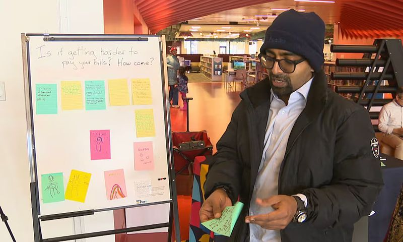
Sống chật vật ở tỉnh đòi ly khai khỏi Canada 🔗 MOI
Hiện Jamieson Gardiner, nhân viên Thư viện Công cộng Airdrie, tỉnh Alberta, Canada, phải đi bộ một tiếng đến chỗ làm hàng ngày để nhường xe cho vợ. Gia đình anh không đủ khả năng trang trải tiền xăng
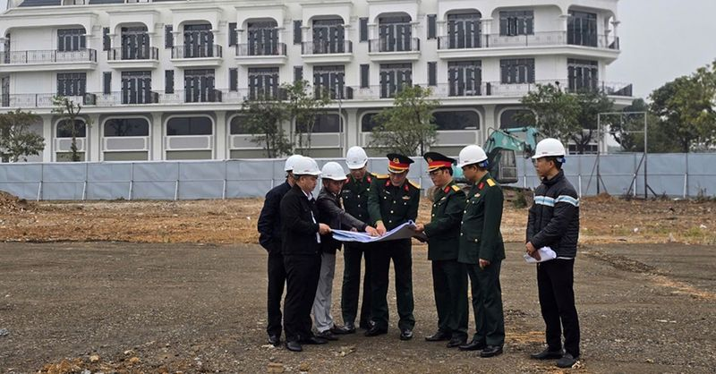
Bộ Quốc phòng tìm nhà đầu tư cho dự án nhà ở tại Thanh Hóa 🔗 MOI
Một dự án nhà ở xã hội tại Hà Nội - Ảnh minh họa: NGUYỄN KHÁNH Cụ thể, Bộ Quốc phòng và Ủy ban nhân dân tỉnh Thanh Hóa đã thống nhất vị trí và thông tin dự án đầu tư xây dựng nhà ở cho gia đình lực lư
Năng lượng & Khoáng sản 🔗 MOI
Ngày 9/4, Ủy ban Thường vụ Quốc hội đã cho ý kiến về dự thảo Nghị quyết của Quốc hội về việc ban hành một số quy định về thuế bảo vệ môi trường, thuế giá trị gia tăng, thuế tiêu thụ đặc biệt đối v
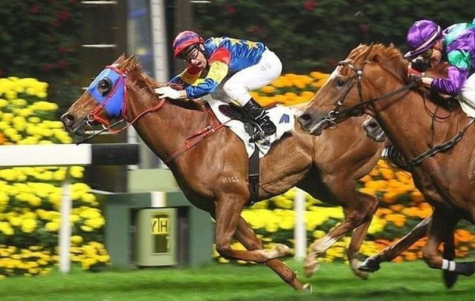
Giai đoạn tăng vốn sôi động, ngành chứng khoán sắp "đón" công ty đầu tiên vốn điều lệ vượt 30.000 tỷ đồng 🔗 MOI
TIN MỚI Trong báo cáo ngành chứng khoán mới nhất, CTCP Xếp hạng Tín nhiệm S&I ( S&I Ratings) đánh giá n ăm 2026 là giai đoạn sôi động của hoạt động tăng vốn trong ngành chứng khoán. Điều này xuất phát
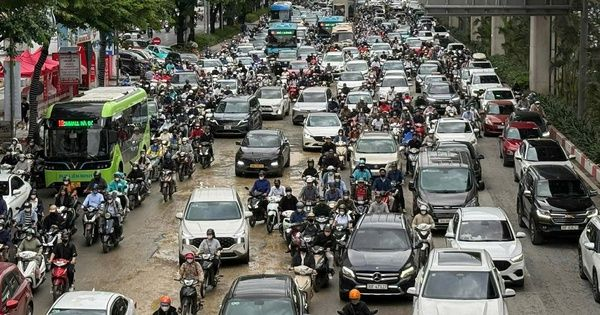
Vùng phát thải thấp ở Hà Nội: Người dân đi lại ra sao? 🔗 MOI
Theo dự thảo đề án "Vùng phát thải thấp trong vành đai 1, TP Hà Nội", khu vực hạn chế phương tiện cá nhân sử dụng nhiên liệu hóa thạch, nhất là xe máy, ô tô chạy xăng dầu, được nêu rõ. Cụ thể, từ ngày
Loạt ảnh vệ tinh cho thấy Mỹ 'đánh giá sai năng lực tập kích của Iran' 🔗 MOI
Washington Post ngày 6/5 công bố kết quả phân tích 109 ảnh vệ tinh độ phân giải cao do truyền thông nhà nước Iran công bố, được chụp từ cuối tháng 2 đến ngày 14/4, trong đó cho thấy thiệt hại ở loạt c
Lịch thi đấu Bắc Ninh - Đồng Nai hôm nay: CLB triệu USD của cố vấn Park sẽ lên thẳng V-League nếu... 🔗 MOI
Đội bóng của cố vấn Park Hang-seo lại bay cao CLB Bắc Ninh của cố vấn Park Hang-seo trở thành nét chấm phá thú vị cho sân chơi hạng nhất 2025 - 2026. Ngay trong lần đầu góp mặt, đại diện miền Bắc đang
Một bang Ấn Độ muốn thu hút doanh nghiệp Việt Nam, có đường bay thẳng tới TP.HCM 🔗 MOI
Tổng Bí thư, Chủ tịch nước Tô Lâm tiếp Thủ hiến bang Maharashtra Devendra Fadnavis - Ảnh: TTXVN Tiếp nối các hoạt động trong khuôn khổ chuyến thăm cấp Nhà nước tới Ấn Độ, ngày 7-5 tại Mumbai, Tổng Bí
Tổng thống Iran nói đã họp với Lãnh tụ tối cao Khamenei, Tehran chưa phản hồi Mỹ 🔗 MOI
Lãnh tụ tối cao Iran Mojtaba Khamenei vẫn chưa xuất hiện công khai kể từ khi nắm quyền - Ảnh: AFP Ngày 7-5, Tổng thống Iran Masoud Pezeshkian cho biết ông đã có cuộc gặp với Lãnh tụ tối cao của nước n
Thót tim với cảnh gió lốc thổi bay bàn ghế, học sinh chạy tán loạn ở Lào Cai 🔗 MOI
Video gió lốc thổi bay bàn ghế, học sinh chạy tán loạn Tối 7-5, trên mạng xã hội xuất hiện đoạn video do camera tại một trường học ở xã Nậm Chày (tỉnh Lào Cai) ghi lại cảnh gió lốc thổi bay bàn ghế,

Kiến tạo không gian phát triển mới cho kinh tế tập thể 🔗 MOI
Pháp luật Trong giai đoạn 2021-2025, dựa vào mục tiêu phát triển, điều kiện ngân sách và nhu cầu hỗ trợ, năng lực của các hợp tác xã, Thủ tướng Chính phủ đã ban hành Chương trình hỗ trợ phát triển kin
Tổng Bí thư, Chủ tịch nước dự Diễn đàn doanh nghiệp Việt Nam - Ấn Độ 🔗 MOI
Tổng Bí thư, Chủ tịch nước Tô Lâm khẳng định Việt Nam không chỉ là điểm đến đầu tư hấp dẫn, mà còn là đối tác tin cậy, đồng hành lâu dài cùng doanh nghiệp quốc tế. Tổng Bí thư, Chủ tịch nước Tô Lâm dự
Tạp chí Kinh tế Sài Gòn 🔗 MOI
Kinh tế Sài Gòn giữ bản quyền nội dung của trang web thesaigontimes.vn. Không sử dụng lại nội dung trên trang này dưới mọi hình thức, trừ khi được Kinh tế Sài Gòn đồng ý bằng văn bản. Trang ngoài sẽ đ
Tạp chí Kinh tế Sài Gòn 🔗 MOI
Kinh tế Sài Gòn giữ bản quyền nội dung của trang web thesaigontimes.vn. Không sử dụng lại nội dung trên trang này dưới mọi hình thức, trừ khi được Kinh tế Sài Gòn đồng ý bằng văn bản. Trang ngoài sẽ đ
Tạp chí Kinh tế Sài Gòn 🔗 MOI
Kinh tế Sài Gòn giữ bản quyền nội dung của trang web thesaigontimes.vn. Không sử dụng lại nội dung trên trang này dưới mọi hình thức, trừ khi được Kinh tế Sài Gòn đồng ý bằng văn bản. Trang ngoài sẽ đ
Tạp chí Kinh tế Sài Gòn 🔗 MOI
Kinh tế Sài Gòn giữ bản quyền nội dung của trang web thesaigontimes.vn. Không sử dụng lại nội dung trên trang này dưới mọi hình thức, trừ khi được Kinh tế Sài Gòn đồng ý bằng văn bản. Trang ngoài sẽ đ
Ba mẫu xe bán tải cũ giá dưới 500 triệu đồng vừa 'lành' vừa kinh tế 🔗 MOI
Dù có một số vấn đề tranh cãi liên quan đến xe bán tải trong thời gian gần đây, nhưng không thể phủ nhận thị trường xe bán tải vẫn duy trì sức hút nhờ tính đa dụng như vừa đi phố, vừa chở hàng, lại có
Cuộc đua vốn nghìn tỷ nóng rực: 5 ngân hàng Việt sắp vượt mốc 100.000 tỷ đồng 🔗 MOI
Đại gia ngân hàng Việt chạy đua vốn tỷ USD 6 ngân hàng Việt có vốn điều lệ trên 70.000 tỷ đồng đều lên kế hoạch bứt phá ngoạn mục về quy mô vốn điều lệ trong năm 2026, trong đó có 5 ngân hàng sẽ lần đ
Chiến lược chống khủng bố mới của Mỹ 🔗 MOI
Chiến lược chống khủng bố mới của Mỹ do Cố vấn Nhà Trắng Sebastian Gorka dẫn đầu. Ảnh: AFP "Rõ ràng là các nhóm thù địch được tổ chức tốt đang lợi dụng biên giới mở và những lý tưởng toàn cầu hóa liên
Chiến sự Ukraine khiến phương Tây vỡ mộng về 'vũ khí hoàn hảo' 🔗 MOI
Sau 4 năm xung đột Nga - Ukraine, Robin Radar, công ty Hà Lan chuyên sản xuất hệ thống radar phát hiện thiết bị bay không người lái (drone) được Ukraine và các đồng minh của Mỹ ở Trung Đông sử dụng, đ
Công an phường Dĩ An thông tin vụ bé trai bị cha dượng bạo hành 🔗 MOI
(PLO)- Công an TP.HCM điều tra vụ người đàn ông nhiều lần đánh bé trai là con riêng của người phụ nữ sống chung như vợ chồng, gây bức xúc dư luận. Ngày 7-5, Công an phường Dĩ An, TP.HCM phối hợp Phòng

Chuyên đề Agribank 🔗 MOI
Trước áp lực thực thi Nghị định số 70/2025/NĐ-CP về hóa đơn điện tử và quản lý thuế, Agribank tổ chức hội nghị tập huấn toàn quốc, thống nhất quy trình hỗ trợ và giới thiệu gói giải pháp số dành riêng
Người Việt ngày càng thích xe điện, chơi xe siêu sang cũng là Rolls-Royce Spectre 🔗 MOI
Từ trái sang phải: Kenny Aulia (Tổng giám đốc, Bán hàng RRMC APAC), Tức Minh Trí (Quản lý Dịch vụ hậu mãi, RRMC TP.HCM), Nhựt Lê (Quản lý Thương hiệu, RRMC TP.HCM), Hiền Vũ (Chuyên viên Marketing, RRM
Dành đất để xây nhà lưu trú công nhân trong khu công nghiệp 🔗 MOI
Ông Lê Văn Thinh, Phó trưởng Ban Quản lý các khu chế xuất và công nghiệp TP.HCM (HEPZA), nêu nhu cầu nhà ở lưu trú công nhân trên địa bàn - Ảnh: N.BÌNH Ngày 7-5, tại Hội nghị triển khai thực hiện chín

TỔNG QUAN TỔNG QUAN KINH TẾ 🔗 MOI
Kinh tế Hoạt động điều hành chính sách tài khóa năm 2025 diễn ra trong bối cảnh tình hình kinh tế trong nước và quốc tế tiếp tục diễn biến phức tạp, căng thẳng thương mại toàn cầu gia tăng, đặc biệt l
Ford Việt Nam ‘nâng tầm’ phiên bản các dòng xe Ranger và Everest 🔗 MOI
Hãng xe Ford Việt Nam vừa giới thiệu dải sản phẩm Ranger và Everest phiên bản nâng cấp, tiếp tục làm mới các dòng xe chủ lực, với hiệu năng vượt trội, công nghệ thông minh và thiết kế hiện đại. Thông

Tiếp nhận phản ánh kiến nghị của công dân 🔗 MOI
HỌ VÀ TÊN * EMAIL * SỐ ĐIỆN THOẠI * ĐỊA CHỈ * TIÊU ĐỀ * FILES ĐÍNH KÈM NỘI DUNG * RadEditor - HTML WYSIWYG Editor. MS Word-like content editing experience thanks to a rich set of formatting tools, dro

Khu Công nghiệp, Khu Kinh tế 🔗 MOI
Ngày 10/5/2026 không chỉ là một cột mốc lịch sử đối với các doanh nghiệp logistics mà còn là minh chứng cho sự chuyển mình mạnh mẽ của ngành Hải quan. Thông tư 25 chính thức có hiệu lực sẽ thay đổi ho
Vì sao một số ngân hàng giảm mạnh lợi nhuận? 🔗 MOI
Trong số các ngân hàng giảm lợi nhuận, SeABank là trường hợp gây chú ý nhất khi lợi nhuận trước thuế quý I chỉ đạt 1.388 tỷ đồng; ngân hàng không còn ghi nhận khoản thu đột biến từ thương vụ chuyển nh
Lệnh ngừng bắn 'lệch nhịp' và nguy cơ leo thang căng thẳng Nga-Ukraine 🔗 MOI
(PLO)- Lệnh ngừng bắn nhân Ngày Chiến thắng do Kiev đơn phương công bố có hiệu lực vào ngày 6-5, cả Nga và Ukraine cáo buộc nhau vi phạm. Đầu tuần này, Nga đơn phương tuyên bố một lệnh ngừng bắn kéo d
Sumitomo và BRG muốn tăng số lượng cư dân tại DA thành phố thông minh 4,2 tỷ USD, Hà Nội yêu cầu sớm triển khai thi công 🔗 MOI
TIN MỚI Tại buổi tiếp lãnh đạo Tập đoàn Sumitomo (Nhật Bản), Ủy viên Bộ Chính trị, Bí thư Thành ủy, Trưởng đoàn đại biểu Quốc hội thành phố Hà Nội Trần Đức Thắng đề cập đến việc triển khai Dự án đô th
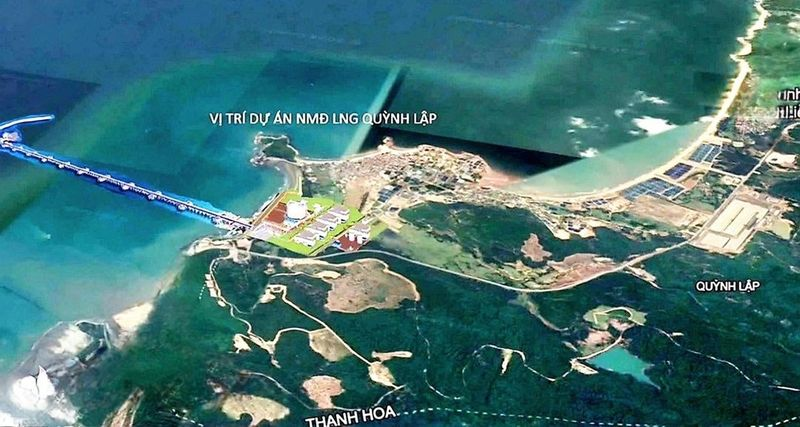
10 ngày nữa sẽ khởi công nhà máy điện 60.000 tỷ tại Nghệ An: Cú bắt tay của PV Power và đại gia Hàn Quốc 🔗 MOI
POW: Giá hiện tại Thay đổi Xem hồ sơ doanh nghiệp TIN MỚI Theo thông tin công bố ngày 6/5/2026, PV Power (mã chứng khoán: POW) đã ban hành Nghị quyết số 37/NQ-ĐLDK về việc góp 51% vốn điều lệ để thành
Hãng bay Mỹ 'gục ngã' vì giá nhiên liệu tăng 🔗 MOI
Hôm 2/5, hãng hàng không giá rẻ Spirit Airlines của Mỹ, thông báo "ngừng hoạt động một cách có trật tự" do hết tiền vận hành, hủy bỏ tất cả chuyến bay, khiến hành khách và nhân viên mắc kẹt trên khắp

Chính phủ với doanh nghiệp 🔗 MOI
20/03/2026 (Chinhphu.vn) - Chính phủ ban hành Nghị quyết số 11/2026/NQ-CP về chi phí tiền lương Ngân hàng thương mại TNHH một thành viên Xây dựng Việt Nam, Ngân... 04/03/2026 (Chinhphu.vn) - Chính phủ
Châu Âu lên tiếng việc Nga kêu gọi các nhà ngoại giao nước ngoài sơ tán khỏi Kiev 🔗 MOI
(PLO)- Các chính phủ nước ngoài không có kế hoạch thu hẹp hiện diện ngoại giao tại Ukraine, sau khi Nga kêu gọi các nhà ngoại giao nước ngoài sơ tán khỏi Kiev. Ngày 7-5, các đại sứ quán nước ngoài chư
Trái tim của Saint Petersburg 🔗 MOI
1 . Người ta gọi Ermitazh là trái tim nghệ thuật của Saint Petersburg (Liên bang Nga), là nơi mà bạn không thể không đến khi đặt chân tới thành phố này. Ermitazh không chỉ là kho tàng nghệ thuật đồ sộ
"Mật mã Đông Dương" 🔗 MOI
Sau gần 40 năm vắng bóng, đề tài tình báo, vốn đặc biệt và khó khai thác nhất trong điện ảnh nước nhà, đã trở lại với dự án phim này. Bộ phim có kinh phí đầu tư thuộc nhóm cao nhất điện ảnh Việt Nam h
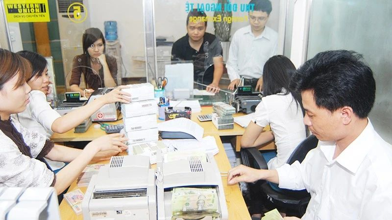
Lãi suất lại gặp áp lực 🔗 MOI
Trong phiên họp thường kỳ của Chính phủ ngày 4/5, Phó Thủ tướng Nguyễn Văn Thắng đánh giá cao nỗ lực của Ngân hàng Nhà nước (NHNN) trong việc điều hành chính sách tiền tệ, đặc biệt là chỉ đạo hệ thống
Ăn sáng với xôi hay bánh mì dễ tăng cân hơn? 🔗 MOI
Xôi được làm chủ yếu từ gạo nếp, loại gạo có hàm lượng tinh bột cao. Một gói xôi mặn với chà bông, lạp xưởng, pate hoặc thịt chả kèm theo đã có thể cung cấp lượng calo tương đương một bữa ăn chính, th
Ả Rập Saudi bất ngờ "cấm cửa" quân đội Mỹ? 🔗 MOI
TIN MỚI Ả Rập Saudi, một đồng minh chủ chốt của Wasghington ở Vùng Vịnh, đã từ chối cho quân đội Mỹ sử dụng căn cứ và không phận tại nước này để thực hiện chiến dịch hỗ trợ tàu thuyền qua lại eo biển

Kiểm soát lạm phát trước những "biến số" cuối năm 🔗 MOI
Tài chính Tại Nghị quyết số 86/NQ-CP ngày 4/11/2025 về triển khai nhiệm vụ trọng tâm những tháng cuối năm 2025, Chính phủ tiếp tục yêu cầu về kiểm soát lạm phát, giữ vững ổn định kinh tế vĩ mô. Trong

Trẻ sinh ra di truyền giang mai từ mẹ có điều trị được không? 🔗 MOI

Vào tứ kết châu Á, U17 nữ Việt Nam được thưởng nóng 500 triệu đồng 🔗 MOI
U17 nữ Việt Nam tạo kỳ tích trong lần thứ hai dự Giải U17 nữ châu Á - Ảnh: AFC Tối 7-5, lượt cuối bảng A Giải U17 nữ châu Á 2026, đội tuyển U17 nữ Việt Nam thắng U17 nữ Myanmar 2-1 . Với việc U17 nữ T
Lịch trực tiếp Giải hạng nhất vòng 18: Bắc Ninh chạm trán Đồng Nai 🔗 MOI
Lịch trực tiếp Giải hạng nhất 2025-2026 vòng 18: CLB Bắc Ninh chạm trán Đồng Nai - Đồ họa: AN BÌNH Trận đấu mở màn vòng 18 Giải hạng nhất 2025-2026 giữa CLB Bắc Ninh gặp Trường Tươi Đồng Nai (16h ngày

Huy động tài chính xanh hướng tới mục tiêu phát triển bền vững 🔗 MOI
Pháp luật Chuyển đổi năng lượng xanh đã trở thành xu thế toàn cầu mang tính bắt buộc, gắn liền với mục tiêu Net Zero và yêu cầu cạnh tranh trong chuỗi cung ứng quốc tế. Trong bối cảnh đó, doanh nghiệp

Tạp chí Kinh tế Tài chính kỳ 3 tháng 3/2026 🔗 MOI

Tạp chí Kinh tế Tài chính kỳ 1 tháng 4/2026 🔗 MOI

Tạp chí Kinh tế Tài chính kỳ 2 tháng 4/2026 🔗 MOI

Bảo vệ nhà đầu tư trước “cơn sốt” tài sản mã hóa 🔗 MOI
Chứng khoán Trong bối cảnh Việt Nam đang từng bước xây dựng khung pháp lý và chuẩn bị thí điểm thị trường tài sản mã hóa theo Nghị quyết số 05/2025/NQ-CP của Chính phủ, bài toán về an toàn hệ thống, m

Nước CHXHCN Việt Nam 🔗 MOI
© Cổng Thông tin điện tử Chính phủ Tổng Giám đốc: Nguyễn Hồng Sâm Trụ sở: 16 Lê Hồng Phong - Ba Đình - Hà Nội. Điện thoại: Văn phòng: 080 43162; Fax: 080.48924 Email: thongtinchinhphu@chinhphu.vn Bản
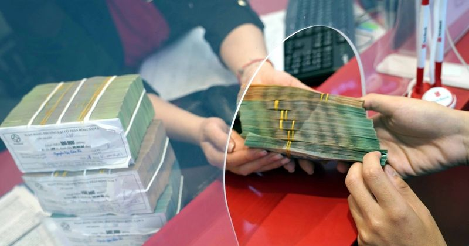
Giải pháp nào giảm lãi vay? 🔗 MOI
Động thái lạ của ngân hàng Khảo sát của Thanh Niên cho thấy sau gần 1 tháng các ngân hàng (NH) công bố giảm lãi suất huy động , lãi vay vẫn ở mức cao. Lãi suất huy động đã giảm nhưng lãi suất cho vay
Nga tăng cường bảo vệ Tổng thống Vladimir Putin trước Ngày Chiến thắng 🔗 MOI
Tổng thống Nga Vladimir Putin. (Ảnh: Tass) Trả lời báo giới ngày 7/5, người phát ngôn Điện Kremlin - Dmitry Peskov - nói: “Các bạn biết đó, vào trước các ngày lễ lớn, bao gồm cả Ngày Chiến thắng, các
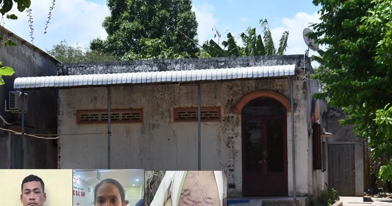
Bạo hành dã man trẻ em: Bi kịch từ trong 'tổ ấm': Hành trình giành lại sự sống cho bé trai 2 tuổi 🔗 MOI
Từ phòng trọ đến phòng cấp cứu Chiều 2/5, tại ấp Phú Lâm, xã Hòa Hiệp, tiếng khóc thét của một bé trai 2 tuổi khiến nhiều người hàng xóm ám ảnh. Ít ai ngờ, sau lớp áo mỏng, thân hình nhỏ bé đang ngủ g
Chiến sự Trung Đông ngày 70: Tehran tấn công tàu chiến Mỹ, Washington không kích loạt địa điểm ở Iran, thỏa thuận ngừng bắn trên bờ vực 🔗 MOI
(PLO)- Quân đội Iran cho biết đã tấn công các tàu chiến Mỹ, cáo buộc Washington vi phạm thỏa thuận ngừng bắn, trong khi đó quân đội Mỹ tuyên bố đáp trả loạt cơ sở quân sự của Tehran. Tình hình Trung Đ
LiveNÓNG: Mỹ bất ngờ tập kích Iran 🔗 MOI
Bộ Tư lệnh Trung tâm Mỹ (CENTCOM) ngày 8.5 (giờ Việt Nam) cho biết lực lượng Mỹ đã nhắm mục tiêu vào các cơ sở quân sự của Iran chịu trách nhiệm thực hiện một loạt các cuộc tấn công bằng tên lửa, máy
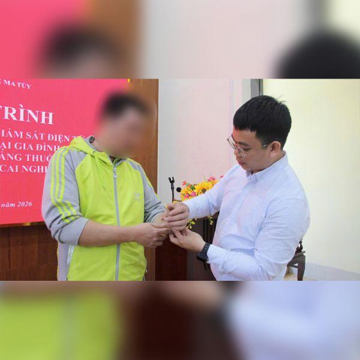
Bản tin thời sự sáng 8/5/2026: Bắt đầu thí điểm đeo thiết bị giám sát điện tử đối với người nghiện ma túy 🔗 MOI
Diễn viên Hồng Ánh tuổi 49 lạc quan sau biến cố sức khỏe, viên mãn bên chồng CEO 🔗 MOI
U50 vẫn được săn đón, lạc quan giữa bệnh tật Chia sẻ với VietNamNet , diễn viên Hồng Ánh kể được bạn bè đồng nghiệp, khán giả trêu “phủ sóng” màn ảnh. Từ đầu năm đến nay, chị có nhiều vai diễn trong c
Quy định đánh đố, nghịch lý 'cải lùi' giữa thời đại số hóa toàn diện 🔗 MOI
Doanh nghiệp áp lực trước 'hàng rào' thủ tục Trao đổi với PV Tiền Phong , PGS, TS. Đặng Ngọc Đức - Viện trưởng Viện Công nghệ tài chính, Trường Đại học Đại Nam - cho biết, hiện nay các quy định mới về
Chiến sự Ukraine ngày 1.534: Kyiv thách thức cảnh báo từ Moscow 🔗 MOI
Bộ Quốc phòng Nga ngày 7.5 cho biết lực lượng nước này đã phá hủy 570 máy bay không người lái (UAV) của Ukraine tập kích nhiều vùng lãnh thổ Nga trong ngày 7.5, trong đó có hàng chục UAV hướng đến thủ
Nước nào tiêu thụ mì tôm nhiều nhất thế giới? 🔗 MOI
1. Nước nào tiêu thụ mì tôm nhiều nhất thế giới? Việt Nam 0% Nhật Bản 0% Hàn Quốc 0% Trung Quốc 0% Chính xác Theo số liệu của Hiệp hội Mì ăn liền Thế giới (WINA) về nhu cầu tiêu thụ trên toàn cầu, năm
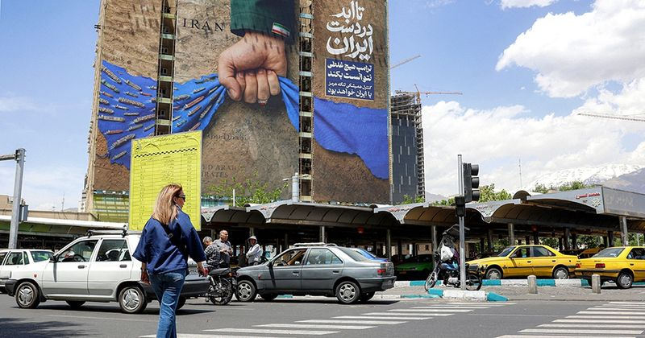
Mơ hồ về một thỏa thuận Trung Đông 🔗 MOI
Vẫn nhiều ngờ vực Reuters hôm qua dẫn tuyên bố của Tổng thống Mỹ Donald Trump dự đoán cuộc chiến với Iran sẽ sớm kết thúc. Phát biểu tại một buổi mít tinh ngày 6.5 theo giờ Mỹ, ông Trump nói với các p
Hải Phòng: Khai mạc chuỗi hoạt động văn hóa đặc sắc tại dải vườn hoa trung tâm 🔗 MOI
(PLO)- Đây là lần đầu trong 13 năm Hải Phòng tổ chức Lễ hội Hoa Phượng Đỏ, khu vực dải vườn hoa trung tâm và quảng trường Nhà hát TP được bố trí thành các không gian lịch sử, văn hóa, ẩm thực, âm nhạc
Lại Lý Huynh đấu giải cờ tướng danh giá của Trung Quốc 🔗 MOI
Khách mời đặc biệt Với thành tích lịch sử lần đầu vượt qua các kỳ thủ Trung Quốc để đăng quang ở giải cờ tướng vô địch thế giới vào năm ngoái, Lại Lý Huynh tạo sức hút lớn. Đó cũng là lý do anh được m
Mỹ - Iran: Hy vọng mới từ đề xuất 14 điểm 🔗 MOI
Iran đang xem xét đề xuất của Mỹ về việc chấm dứt xung đột giữa lúc nỗ lực ngoại giao tiếp tục được xúc tiến thông qua nước trung gian Pakistan. Người phát ngôn Bộ Ngoại giao Pakistan Tahir Andrabi ng
“Luồng xanh” mới trên chiến trường xưa 🔗 MOI
1 . Thuộc nhóm các dự án được tỉnh Điện Biên ưu tiên thực hiện theo cơ chế "luồng xanh" với nhiều thủ tục, thời gian rút gọn, chiều 10/5 tới, tại xã Mường Phăng sẽ diễn ra lễ khởi công dự án Tổ hợp cá
Philippines xác nhận 7 thủy thủ bị thương trong vụ tấn công tại eo biển Hormuz 🔗 MOI
Chào mừng quý độc giả và thính giả đến với Bản tin Thế giới - chuyên mục podcast thời sự quốc tế hàng ngày trên Báo Điện tử VietnamPlus. Tại đây, chúng tôi cập nhật nhanh nhất những diễn biến nổi bật
Một đại gia điện mặt trời bất ngờ báo lỗ gần 1.000 tỷ năm 2025, vốn chủ sở hữu giảm 62% 🔗 MOI
TIN MỚI Kết thúc năm tài chính 2025, doanh nghiệp ghi nhận khoản lỗ sau thuế 969 tỷ đồng, trái ngược với mức lãi 138,2 tỷ đồng đạt được trong năm 2024. Kết quả kinh doanh này đã đẩy lỗ lũy kế của đơn

Huy động nguồn lực cho tăng trưởng xanh 🔗 MOI
Pháp luật Bài viết phân tích tiềm năng, thực trạng và định hướng phát triển các mô hình du lịch biển tại Việt Nam nhằm hướng tới một nền kinh tế biển xanh, bền vững. Với đường bờ biển dài hơn 3.260 km
Tổng Bí thư, Chủ tịch nước Tô Lâm tiếp Thống đốc bang Maharashtra 🔗 MOI
Trong khuôn khổ chuyến thăm cấp Nhà nước tới Ấn Độ, ngày 7/5, tại thành phố Mumbai, Tổng Bí thư, Chủ tịch nước Tô Lâm đã tiếp Thống đốc bang Maharashtra Jishnu Dev Varma. Tổng Bí thư, Chủ tịch nước Tô

Tự chủ an ninh năng lượng quốc gia 🔗 MOI
Kinh tế Trong bối cảnh những cú sốc năng lượng toàn cầu ngày càng lan rộng và khó dự báo, bảo đảm an ninh năng lượng đã trở thành vấn đề sống còn đối với mỗi quốc gia. Với Việt Nam, Nghị quyết số 70-N
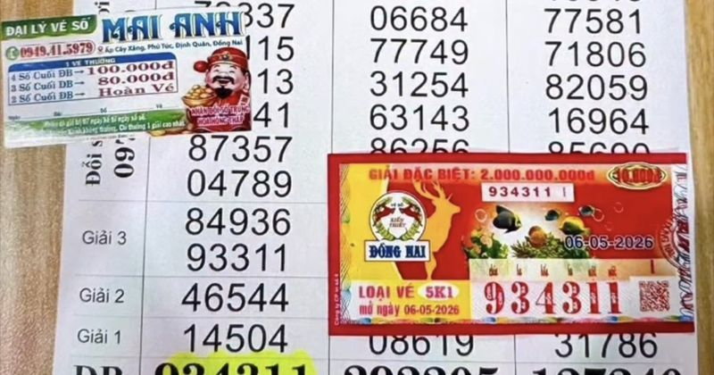
Trúng độc đắc xổ số miền Nam, cả nhà 5 người lãnh tiền ngay trong đêm 🔗 MOI
Đại lý vé số Mai Anh ở Đồng Nai cho biết đã đổi thưởng cho khách có tờ vé số trúng độc đắc. Cụ thể, tờ vé có dãy số 934311 thuộc đài Đồng Nai mở thưởng xổ số miền Nam ngày 6 tháng 5 trúng độc đắc trị
Vải thiều - sầu riêng cùng gặp khó 🔗 MOI
Vải thiều mất mùa nghiêm trọng, sản lượng nhiều nơi giảm tới 80% và người trồng đang thấp thỏm kỳ vọng vào một mùa được giá. Trong khi đó, sầu riêng đang vào vụ thu hoạch lại vấp phải điểm nghẽn kiểm
U17 Việt Nam thắng ở giải châu Á: Người truyền lửa, Cristiano Roland 🔗 MOI
Từ chuỗi trận bất bại Chiến thắng trước U17 Yemen ở giải U17 châu Á chưa thể giúp U17 Việt Nam mở toang cánh cửa vào tứ kết và giành vé dự U17 World Cup. Tuy vậy, màn khởi đầu ấn tượng ấy là khích lệ
Nút thắt khó gỡ 🔗 MOI
Theo AP, Tổng thống Iran Masoud Pezeshkian đã có cuộc điện đàm với Thủ tướng lâm thời Iraq Ali al-Zaidi ngày 5/5, khẳng định chính sách “gây sức ép tối đa” của Washington đã tạo ra nghịch lý khi gia t

Đừng chủ quan với “hàng cơ bản” 🔗 MOI
Trước tiên cần phải khẳng định, việc doanh nghiệp (DN) rơi vào tình huống khó khăn, hay gặp phải những giai đoạn thách thức cũng là điều bình thường vì rủi ro trong đầu tư, kinh doanh vốn luôn hiện hữ
Bồi đắp “sức bền” cho doanh nghiệp 🔗 MOI
Đầu năm 2026, anh Nguyễn Duy Minh (từng làm việc trong lĩnh vực thương mại điện tử) quyết định thành lập một doanh nghiệp nhỏ chuyên kinh doanh thực phẩm sạch tại Hà Nội. “Môi trường khởi sự kinh doan
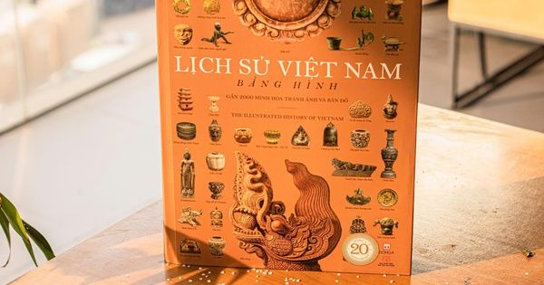
Giải thưởng Sách quốc gia lần IX nhận hồ sơ tham dự 🔗 MOI
Theo Hội Xuất bản Việt Nam, sách tham dự phải được Cục Xuất bản, In và Phát hành xác nhận nộp lưu chiểu từ ngày 1-11-2024 đến 31-10-2025. Giải thưởng Sách quốc gia năm nay tiếp tục xét chọn các đầu sá
Cầu kính 800 tỷ tại Sơn La được công nhận dài nhất thế giới: Ai đứng sau? 🔗 MOI
TIN MỚI Cầu kính Bạch Long, nằm trong quần thể nghỉ dưỡng Mộc Châu Island tại tỉnh Sơn La được Tổ chức Kỷ lục Guinness thế giới công nhận là cầu đi bộ đáy kính dài nhất thế giới với tổng chiều dài 632

Bộ Tài chính đồng hành cùng doanh nghiệp nhỏ và vừa trên hành trình chuyển đổi kép 🔗 MOI
Chuyển đổi số Trong bối cảnh tiêu chuẩn ESG, yêu cầu Net Zero và sức ép cạnh tranh toàn cầu ngày càng gia tăng, phần lớn doanh nghiệp Việt Nam, đặc biệt là doanh nghiệp nhỏ và vừa đang đối mặt với kho

Xoắn dây tinh và thời gian vàng cấp cứu 🔗 MOI
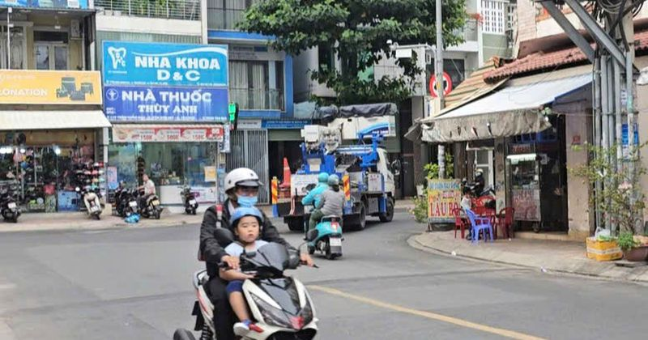
Biển báo bị che khuất, tài xế xe tải ở TP.HCM 'đi cũng dở, lùi cũng không xong' 🔗 MOI
Nhiều tài xế phản ánh biển báo cấm xe tải trên đường Trần Hưng Đạo (phường Tân Sơn Nhì, TP.HCM) bị che khuất tầm nhìn, đặt tại vị trí đường cong gây khó khăn cho việc xử lý và tiềm ẩn nguy cơ tai nạn
Tạm hoãn xuất cảnh nếu nợ thuế từ 1 triệu đồng: Nên đi kèm với cơ chế “mở khóa tức thời” 🔗 MOI
(PLO)- Chuyên gia cho rằng ngưỡng 1 triệu đồng nên đi kèm với quy trình xác minh nhiều tầng, đồng thời cần áp dụng cơ chế “mở khóa tức thời” cho người hoàn thành nghĩa vụ. Bộ Tài chính vừa gửi Bộ Tư p
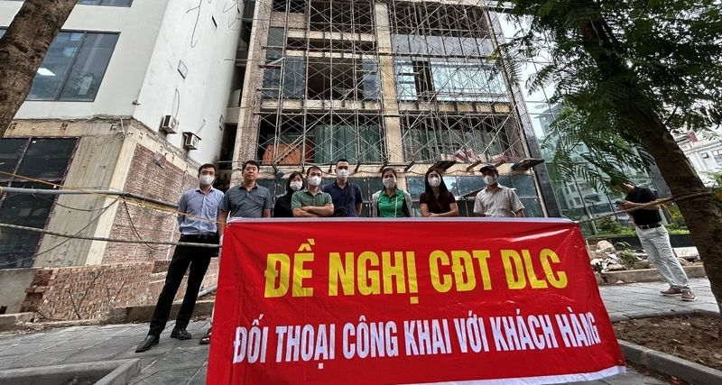
Dự án Harmony Square lùi bàn giao nhiều lần, người mua gánh áp lực thuê nhà, trả nợ vay 🔗 MOI
Nhiều khách hàng mua nhà tại dự án DLC - Complex Nguyễn Tuân (Harmony Square) trên đường Nguyễn Tuân (phường Thanh Xuân, Hà Nội) đang lo lắng trước việc dự án chậm tiến độ, liên tục lùi thời hạn bàn g
Thủ tướng Lê Minh Hưng gặp lãnh đạo các nước, tổ chức quốc tế tại Philippines 🔗 MOI
Ngày 7-5, tại Cebu (Philippines), Thủ tướng Lê Minh Hưng đã có các cuộc tiếp xúc song phương với lãnh đạo nhiều quốc gia và tổ chức quốc tế như Brunei, Philippines, Timor-Leste, Campuchia và Ngân hàng
Nhật Bản tăng cường quan hệ hợp tác quốc tế 🔗 MOI
Nâng tầm quan hệ Nhật Bản - Australia Trong khuôn khổ chuyến thăm chính thức Australia, Thủ tướng Nhật Bản Takaichi Sanae và người đồng cấp nước chủ nhà Anthony Albanese đã đạt nhiều thỏa thuận quan t
Gỡ "điểm nghẽn" bảo đảm tăng trưởng thực chất 🔗 MOI
Báo Thời Nay triển khai đăng tải các bài viết về chủ đề đưa nghị quyết Đại hội XIV vào cuộc sống với đề tài đa dạng, trên các lĩnh vực kinh tế, xã hội, văn hóa, đối ngoại, an ninh-quốc phòng... Mong đ
Tình yêu của mẹ 🔗 MOI
Người nữ thư ký bưu điện đứng tuổi đếm tiền rất lâu, viết biên lai và đóng dấu bằng đôi tay lẩy bẩy. Ông lão nhìn chị ta qua khung cửa gỗ. Người phụ nữ với đôi mắt đỏ hoe và lơ đãng như đang nghĩ về đ

Bảo vệ mắt trước các thiết bị điện tử 🔗 MOI
- Đặt màn hình thấp hơn tầm mắt để mí mắt che phủ một phần nhãn cầu, giúp giảm tình trạng bay hơi nước mắt. Hầu hết mọi người sử dụng máy tính sẽ cảm thấy thoải mái hơn khi màn hình thấp hơn tầm mắt t
Hàng “độc” Nam Phi... xa mà gần 🔗 MOI
Các sản phẩm từ “mặt hàng” này đều thuộc danh mục động vật nguy cấp, quý hiếm đã được định danh trong Sách đỏ (diện động vật được bảo vệ bởi nguy cơ tuyệt chủng, không thể và không được phép khai thác
TP.HCM phát hiện hơn 20.000 ca bệnh lao mỗi năm, đẩy mạnh sàng lọc qua khám sức khỏe định kỳ 🔗 MOI
Kỹ thuật viên chụp X-quang khám sàng lọc bệnh lao trên xe lưu động với sự hỗ trợ của AI - Ảnh minh họa: HÀ QUÂN Phát hiện bệnh nhân lao mới nhiều nhất từ trước đến nay Đây là thông tin được chia sẻ tạ
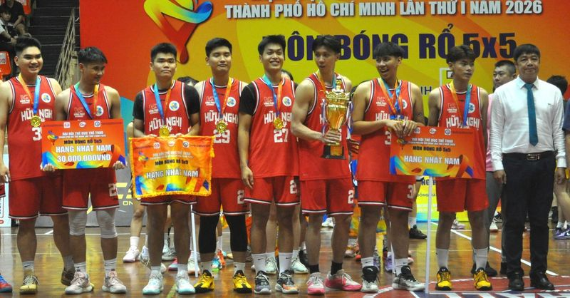
Xác định nhà vô địch môn bóng rổ 5x5 Đại hội TDTT TP.HCM 🔗 MOI
Phường Tân Sơn Nhất lên ngôi vô địch môn bóng rổ nam 5x5 - Đại hội TDTT TP.HCM năm 2026 - Ảnh: ANH HÀO Tối 7-5, hai trận chung kết nội dung nam, nữ môn bóng rổ 5x5 - Đại hội TDTT năm 2026 đã diễn ra t

quản lý ngân sách hiệu quả, phục vụ chính quyền địa phương 2 cấp 🔗 MOI
Tài chính Không chỉ tinh gọn, sắp xếp bộ máy và kịp thời tham mưu, ban hành, triển khai các văn bản hướng dẫn về kế toán phục vụ mô hình chính quyền địa phương 2 cấp, tham gia các đoàn công tác cùng B

Hiểu đúng thí điểm vùng phát thải thấp từ 1-7: Không cấm hết xe máy xăng như lời đồn 🔗 MOI
Chi tiết khu vực dự kiến thí điểm vùng phát thải thấp tại Hà Nội từ ngày 1-7-2026 - Ảnh: VTV Từ ngày 1-7, Hà Nội bắt đầu triển khai thí điểm vùng phát thải thấp (Low Emission Zone - LEZ) tại 9 phường
🔗 MOI
Từ Gen Z đến các cụ ông cụ bà tóc bạc, mạng xã hội những ngày gần đây bỗng rủ nhau… nổi loạn. Nhưng thay vì bỏ nhà đi bụi, nhiều người chỉ chọn ngủ trễ một phút, nấu cơm muộn vài giây để vui vẻ 'đu tr
ASEAN ủng hộ sáng kiến của Việt Nam tại Hội nghị cấp cao 48 🔗 MOI
Thứ trưởng Ngoại giao Đặng Hoàng Giang tham dự các hội nghị - Ảnh: Bộ Ngoại giao Theo thông tin từ Bộ Ngoại giao, ngày 7-5, loạt hội nghị cấp Bộ trưởng Ngoại giao ASEAN để trù bị cho Hộ
Xô xát trong nhà, em họ cắn đứt môi anh 🔗 MOI
Các bác sĩ thăm khám cho bệnh nhân sau phẫu thuật - Ảnh: BVCC Theo chia sẻ của gia đình, sau một cuộc xô xát tại nhà, ông V. đã bị người em họ tấn công. Đối phương đã dùng răng cắn mất một mảnh môi lớ
7 bước đăng ký tuyển sinh lớp 1 và 6 trực tuyến ở TP.HCM 🔗 MOI
Học sinh lớp 1 ở TP.HCM trong ngày khai trường. Năm nay TP.HCM tuyển sinh lớp 1 và 6 theo 7 bước - Ảnh: N.H. Theo đó, phụ huynh đăng ký tuyển sinh lớp 1 và 6 với 7 bước và chọn 1 trong 5 đối tượng như
Thủ tướng Lê Minh Hưng gặp song phương lãnh đạo nhiều nước bên lề Hội nghị cấp cao ASEAN 🔗 MOI
Thủ tướng Lê Minh Hưng gặp Tổng thống Philippines Ferdinand Romualdez Marcos Jr, Chủ tịch ASEAN năm 2026 - Ảnh: TTXVN Theo TTXVN, ngày 7-5, Thủ tướng Lê Minh Hưng đã có các cuộc tiếp xúc song phương v
HLV Okiyama Masahiko: U17 nữ Việt Nam phải chuẩn bị thật tốt cho tứ kết 🔗 MOI
HLV Okiyama Masahiko ăn mừng chiến thắng của U17 nữ Việt Nam - Ảnh: AFC Đội tuyển U17 nữ Việt Nam đã thắng U17 nữ Myanmar 2-1 ở lượt cuối bảng A Giải U17 nữ châu Á 2026 diễn ra tại Tô Châu (Trung Quốc
U17 Việt Nam sáng cửa đến World Cup 🔗 MOI
Chiến thắng trước Yemen là bước chạy đà quan trọng cho U17 Việt Nam trong việc hướng đến chiếc vé dự U17 World Cup 2026 - Ảnh: AFC Rạng sáng 7-5, tuyển U17 Việt Nam thắng 1-0 U17 Yemen trong trận đấu
Rộn ràng chuỗi hoạt động tại dải vườn hoa trung tâm và nhà hát Hải Phòng 🔗 MOI
Đây là sự kiện có quy mô lớn, diễn ra liên tục trong 7 ngày (từ 7 - 13/5) với mục tiêu quảng bá rộng rãi các giá trị văn hóa và sản phẩm du lịch đặc trưng trên địa bàn thành phố Hải Phòng. Tối 7/5, Ba

Ấn phẩm 🔗 MOI
Tổng Biên tập: TS. Phạm Thu Phong Phó Tổng Biên tập: TS. Đỗ Văn Hải, TS.
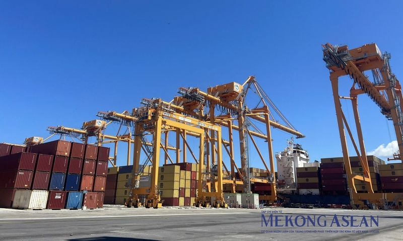
Ngày 6/5 hàng năm là Ngày Logistics Việt Nam 🔗 MOI
Nhằm ghi nhận những đóng góp quan trọng của ngành logistics vào nền kinh tế, Bộ Công Thương vừa ban hành quyết định chính thức công nhận ngày 6/5 hàng năm là Ngày Logistics Việt Nam. Tại Quyết định số
Hà Nội nghiên cứu di dời, sắp xếp lại dân cư ngoài đê sông Hồng 🔗 MOI
Bộ Nông nghiệp và Môi trường cùng UBND TP Hà Nội vừa thống nhất chủ trương từng bước di dời, sắp xếp lại khu dân cư ngoài đê nhằm tái thiết không gian hai bên sông Hồng theo định hướng quy hoạch mới.

Báo cáo tài chính doanh nghiệp 🔗 MOI
Quý 1/2026, VNG báo lãi sau thuế 125 tỷ đồng, trong khi cùng kỳ năm trước lỗ 15 tỷ đồng. Đây là mức lãi theo quý cao nhất mà VNG ghi nhận kể từ quý 2/2021..
Techcombank chi gần 5.000 tỷ đồng trả cổ tức tiền mặt 🔗 MOI
Ngân hàng Techcombank dự kiến chia cổ tức tiền mặt 7% cho năm 2025, tương đương hơn 4.960 tỷ đồng, tiếp tục duy trì chính sách trả cổ tức năm thứ ba liên tiếp sau một thập kỷ giữ lại lợi nhuận. Ảnh mi
Thủ tướng Lê Minh Hưng tiếp xúc song phương bên lề Cấp cao ASEAN 48 🔗 MOI
Ngày 7/5, tại Cebu, Philippines, Thủ tướng Lê Minh Hưng đã có các cuộc tiếp xúc song phương với lãnh đạo nhiều nước ASEAN và Chủ tịch Ngân hàng Phát triển châu Á (ADB) nhân dịp tham dự Hội nghị cấp ca

Chính phủ với công dân 🔗 MOI
07/05/2026 (Chinhphu.vn) - Bà Đỗ Thị Hồng Hà (Quảng Ngãi) có thửa đất lớn tách ra 3 thửa, có ranh giới rõ ràng và xây nhà ở trước năm 1975. Khi đăng ký theo Chỉ... 07/05/2026 (Chinhphu.vn) - Người đứn
17 giờ hôm nay, TP.HCM đóng hệ thống điều chỉnh nguyện vọng lớp 10 🔗 MOI
(PLO)- Đúng 17 giờ hôm nay (8-5), hệ thống tuyển sinh lớp 10 tại TP.HCM sẽ đóng. Sau thời điểm này, học sinh không còn cơ hội điều chỉnh nguyện vọng. Theo Sở GD&ĐT TP.HCM, học sinh lớp 9 sẽ thực hiện
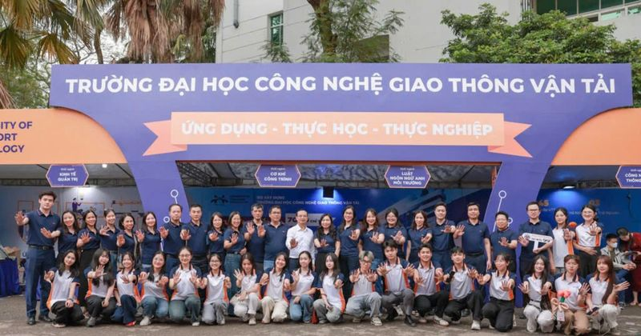
Trường Đại học Công nghệ GTVT tuyển 7.000 chỉ tiêu cho loạt ngành học đang 'khát' nhân lực 🔗 MOI
Nhiều ngành học bắt nhịp xu hướng chuyển đổi số và phát triển hạ tầng Chia sẻ với Chuyên trang Sinh Viên Việt Nam, Báo Tiền Phong, TS. Phạm Quang Dũng - Phó Trưởng phòng Đào tạo, Trường Đại học Công n
Iran công bố loạt quy định cho tàu thuyền qua eo biển Hormuz 🔗 MOI
Theo CNN , tài liệu mang tên "Tờ khai thông tin tàu thuyền" do Cơ quan Quản lý Eo biển Vùng Vịnh Ba Tư (PGSA) của Iran ban hành, yêu cầu các tàu thuyền phải cung cấp đầy đủ thông tin trước khi được ph
[Video] Hàn Quốc theo đuổi chính sách hòa giải với Triều Tiên 🔗 MOI
Seoul khẳng định tiếp tục chính sách “cùng chung sống hòa bình” với Triều Tiên... ...dù trước đó 1 ngày, Triều Tiên sửa Hiến pháp, loại bỏ mục tiêu thống nhất bán đảo Bình Nhưỡng tiếp tục củng cố học
Crystal Palace làm nên lịch sử, lần đầu góp mặt ở chung kết Cúp châu Âu 🔗 MOI
Palace thắng chung cuộc 5-2 Dù đã dẫn đối thủ tới 3-1 sau lượt đi, HLV Oliver Glasner vẫn cho thấy sự tính toán chiến thuật vô cùng cẩn trọng. Ông chấp nhận hy sinh kết quả ở giải Ngoại hạng Anh cuối
Chính quyền 2 cấp vận hành ở Cà Mau ra sao sau 1 năm? 🔗 MOI
UBND tỉnh Cà Mau v ừa tổ chức Hội nghị sơ kết 1 năm thực hiện sắp xếp đơn vị hành chính và chính quyền địa phương 2 cấp. UBND tỉnh Cà Mau cho biết, sau sắp xếp đơn vị hành chính, tỉnh đã chuyển giao 3
Xác định 2 đội bóng vào chung kết Europa League 2025/26 🔗 MOI
Aston Villa bước vào trận lượt về với Nottingham trong thế bất lợi sau khi thua 0-1 ở lượt đi. Tuy nhiên, HLV Unai Emery tạo dấu ấn chiến thuật khi kéo Victor Lindelof xuống đá tiền vệ trụ thay Onana
Tổng Bí thư, Chủ tịch nước Tô Lâm bắt đầu chuyến thăm cấp Nhà nước tới Sri Lanka 🔗 MOI
Thủ tướng Sri Lanka Harini Amarasuriya đón Tổng Bí thư, Chủ tịch nước Tô Lâm tại sân bay quốc tế Bandaranaike, Colombo, Sri Lanka. (Ảnh: Thống Nhất – TTXVN) Tham gia Đoàn chính thức có các đồng chí: N
Tổng Bí thư, Chủ tịch nước Tô Lâm bắt đầu thăm cấp Nhà nước tới Sri Lanka 🔗 MOI
Facebook Twitter Lưu bài viết Bản in Copy link Theo đặc phái viên TTXVN, sau khi kết thúc tốt đẹp chuyến thăm cấp Nhà nước Cộng hòa Ấn Độ, tối 7/5 (theo giờ địa phương), chuyên cơ chở Tổng Bí thư, Chủ
Cuộc đời thăng trầm của người sáng lập đài CNN 🔗 MOI
Ted Turner, người sáng lập mạng lưới CNN và tạo ra mô hình tin tức truyền hình 24/7, qua đời ngày 6/5. Sự ra đi của ông khép lại cuộc đời của một người tiên phong trong ngành truyền thông, trải qua nh
Mắc loạt bệnh nan y dồn dập, nữ sinh Hà Nội trấn an mẹ ‘chỉ cần hôm nay còn mở mắt’ 🔗 MOI
Không sợ bệnh, chỉ sợ người thân bật khóc Diệu Thương (23 tuổi, trú tại Hà Nội) có gương mặt xinh xắn và lối sống tích cực lan tỏa đến mọi người. Tuy nhiên, ít ai biết rằng Thương đã trải qua hành trì
ASEAN và Việt Nam: 'Tấm khiên mềm' và bệ phóng chiến lược trong thế giới biến động 🔗 MOI
Sáng 7-5, Thủ tướng Chính phủ Lê Minh Hưng và đoàn đại biểu cấp cao Việt Nam lên đường tham dự Hội nghị Cấp cao ASEAN (Hiệp hội các quốc gia Đông Nam Á) lần thứ 48 tại Cebu (Philippines) từ ngày 7 đến
Thủ tướng Thái Lan, Campuchia gặp nhau bên lề thượng đỉnh ASEAN, cam kết thúc đẩy xây dựng lòng tin 🔗 MOI
(PLO)- Thủ tướng Campuchia Hun Manet và Thủ tướng Thái Lan Anutin Charnvirakul có cuộc gặp bên lề Hội nghị Cấp cao ASEAN tại Philippines dưới sự trung gian của Tổng thống Philippines Ferdinand Marcos

Tử vi ngày 8 tháng 5: Con giáp nào may mắn hôm nay? 🔗 MOI
Tuổi Tí trong tử vi ngày 8 tháng 5 có thể nhận ra mình đang dành quá nhiều thời gian cho những việc không tạo kết quả rõ ràng. Khi mạnh dạn cắt bớt, bạn sẽ thấy đầu óc nhẹ hơn và công việc hiệu quả hơ
Chấm dứt 12 năm tha hương chạy thận 🔗 MOI
Nằm trong phòng lọc máu Trung tâm Y tế Quân dân y Côn Đảo ngày 6/5, bà Minh cảm giác "như được trở về" sau hơn một thập kỷ rời đảo chữa bệnh. Với bà, đây không chỉ là buổi lọc máu định kỳ, mà còn khép
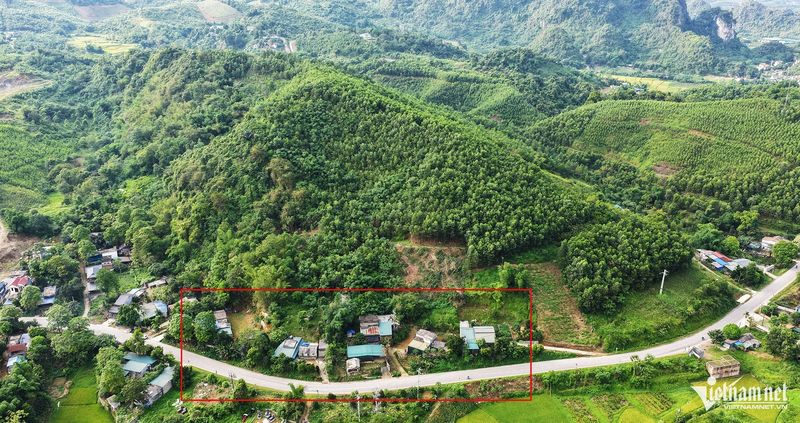
Cảnh sống 'cứ mưa là bỏ nhà chạy' của 36 người ở Phú Thọ 🔗 MOI
XEM CLIP: Gần 3 năm qua, từ thời điểm xảy ra bão Yagi, cứ vào mùa mưa, người dân xóm Bãi Khoai lại sống trong cảnh thấp thỏm. Phía sau nhà của 7 hộ dân là quả đồi cao hàng chục mét xuất hiện nhiều vết
Ngày Thalassemia thế giới 8.5 là ngày gì? Theo lịch âm hôm nay có gì đặc biệt? 🔗 MOI
Dương lịch hôm nay là thứ sáu đánh dấu năm 2026 trải qua ngày thứ 127. Theo lịch âm hôm nay 8.5 là ngày 22 tháng 3, theo cách gọi can chi là ngày Nhâm Ngọ, tháng Nhâm Thìn, năm Bính Ngọ. Ngày 8.5 hôm
Argentina điều tra nguồn gốc ổ dịch virus Hanta trên tàu du lịch 🔗 MOI
Các quan chức và chuyên gia y tế tại Argentina đang khẩn trương điều tra xem liệu nước này có phải là nguồn khởi phát đợt bùng phát virus Hanta chết người trên tàu du lịch MV Hondius ở Đại Tây Dương h
Học Bác về tinh thần trách nhiệm, sẻ chia 🔗 MOI
Chiều 7-5, tại Đặc khu Côn Đảo, LĐLĐ TP HCM đã tổ chức Hội nghị sơ kết 5 năm thực hiện Kết luận 01-KL/TW của Bộ Chính trị về tiếp tục thực hiện Chỉ thị 05-CT/TW và tuyên dương gương điển hình tiên
Chiêu trò của Chủ tịch Hội đồng IEMS với 80.000 người 🔗 MOI
Ngày 7-5, Cơ quan An ninh điều tra Công an tỉnh Phú Thọ phối hợp cùng Bộ Công an tiếp tục làm rõ đường dây lừa đảo tổ chức thi, cấp chứng chỉ ngoại ngữ tiếng Anh trái phép quy mô lớn liên quan Viện Kh
Linh hoạt thích ứng với thị trường lao động 🔗 MOI
Tiền lương có thể tăng, quyền lợi an sinh xã hội có thể được mở rộng nhưng cơ hội việc làm sẽ không còn "dễ thở" như trước. Từ năm 2026, khi hàng loạt chính sách mới về tiền lương, BHXH và chuyển đổi
“Chìa khóa” cho an ninh năng lượng 🔗 MOI
Đó là lời kêu gọi được các quan chức chính phủ, lãnh đạo các ngành công nghiệp và giới chuyên gia đưa ra tại một hội nghị của Nhóm các nước công nghiệp phát triển (G7) do Pháp triệu tập ngày 4/5, tại
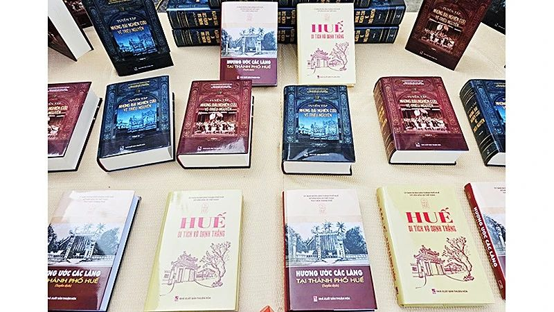
Góp thêm vào hệ sinh thái tri thức Huế 🔗 MOI
16 ấn phẩm, mỗi công trình đều được lựa chọn kỹ lưỡng, đầu tư công phu, hướng đến mục tiêu lâu dài là xây dựng một hệ thống tri thức chuẩn mực về mảnh đất và con người Huế. Quy tụ nhiều nhà nghiên cứu

Vẫn bát nháo, mất vệ sinh 🔗 MOI
Nguyễn Duy Hưng (Phường Đống Đa, thành phố Hà Nội) Mùa mưa trở lại, vai trò của hệ thống ao, hồ cả tự nhiên và nhân tạo trong điều tiết, thoát nước đô thị càng rõ nét. Tuy nhiên, ngay cả khi đã được c

“Cửa hẹp” vào lớp 10 🔗 MOI
Cả hai đều có con đang học lớp 8. Một năm nữa mới thi vào lớp 10, nhưng kỳ thi dường như đã bắt đầu từ bây giờ. Không phải vì lo quá xa, mà vì họ hiểu “cuộc đua” này khốc liệt hơn cả kỳ thi đại học.
Vẫn thiếu người “vẽ bản đồ” công nghệ 🔗 MOI
Nghị định số 231/2025/NĐ-CP của Chính phủ ban hành ngày 28/8/2025 lần đầu đưa ra khái niệm “tổng công trình sư”, “kiến trúc sư trưởng” cho các chương trình, dự án trọng điểm về khoa học-công nghệ, đổi
Việt Nam - Ấn Độ cùng nhau vươn lên 🔗 MOI
Tiếp tục chuyến thăm cấp Nhà nước Cộng hòa Ấn Độ, sau khi kết thúc các hoạt động tại thủ đô New Delhi, sáng 7-5, Tổng Bí thư, Chủ tịch nước Tô Lâm và Đoàn đại biểu cấp cao Việt Nam đã tới thăm, làm vi
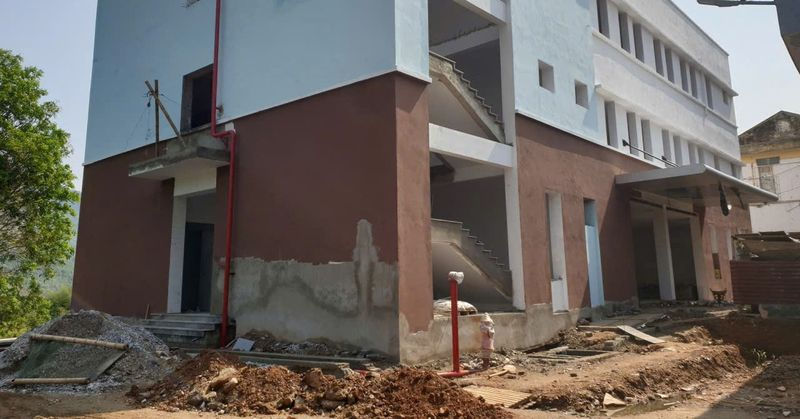
Khu khám chữa bệnh chậm tiến độ, bệnh viện vùng cao Mường Lát gặp khó 🔗 MOI
Khu khám, chữa bệnh của Bệnh viện Đa khoa Mường Lát, tỉnh Thanh Hóa đang xây dựng dang dở, chậm tiến độ - Ảnh: HÀ ĐỒNG Theo tìm hiểu của Tuổi Trẻ Online , công trình này được UBND tỉnh Thanh Hóa phê d
Tin tức sáng 8-5: ACV chốt thời gian họp đại hội đồng cổ đông sau loạt biến cố về lãnh đạo 🔗 MOI
ACV sẽ tổ chức đại hội đồng cổ đông ngay trong tháng 6 này - Ảnh: DN ACV chốt thời gian họp đại hội đồng cổ đông sau loạt biến cố lãnh đạo Tổng công ty Cảng hàng không Việt Nam ( ACV ) vừa công bố thô

Góc chuyên gia & nhà quản lý 🔗 MOI
Ngày 10/5/2026 không chỉ là một cột mốc lịch sử đối với các doanh nghiệp logistics mà còn là minh chứng cho sự chuyển mình mạnh mẽ của ngành Hải quan. Thông tư 25 chính thức có hiệu lực sẽ thay đổi ho

Hoạt động của Lãnh đạo Bộ Tài chính 🔗 MOI
Ngày 10/5/2026 không chỉ là một cột mốc lịch sử đối với các doanh nghiệp logistics mà còn là minh chứng cho sự chuyển mình mạnh mẽ của ngành Hải quan. Thông tư 25 chính thức có hiệu lực sẽ thay đổi ho
Quân đội chuẩn bị nhân lực cho vũ khí công nghệ cao 🔗 MOI
Đào tạo “tinh hoa” cho Quân đội hiện đại Tại hội thảo “Đào tạo tài năng - Giải pháp đột phá phát triển nguồn nhân lực chất lượng cao phục vụ xây dựng Quân đội cách mạng, chính quy, tinh nhuệ, hiện đại
Giá bạc hôm nay 8/5/2026 tăng dựng đứng, áp sát ngưỡng 84 triệu đồng/kg 🔗 MOI
Giá bạc trong nước hôm nay 8/5/2026 Khép lại giao dịch ngày 7/5, thị trường bạc trong nước ghi nhận phiên biến động mạnh khi giá kim loại quý này tăng gần 3 triệu đồng/kg chỉ trong một ngày. Nhờ đó, g
🔗 MOI
Tình trạng hơn một nửa thí sinh dưới điểm 5 không còn xảy ra Toán là một trong 3 môn thi vào lớp 10 tại TPHCM, cùng với Ngữ văn và Ngoại ngữ. TPHCM khu vực 1 đã đổi mới đề thi môn Toán từ năm 2015, vớ
U17 Việt Nam "đầu đã xuôi..." 🔗 MOI
Chiến thắng tối thiểu trước U17 Yemen ở lượt mở màn bảng C Giải U17 châu Á 2026 giúp U17 Việt Nam nắm lợi thế đáng kể. Những pha phối hợp bài bản Rạng sáng 7-5, U17 Việt Nam giành trọn 3 điểm nhờ trận
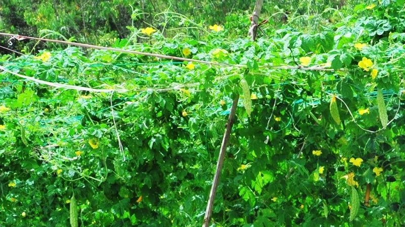
Nhớ mùa hoa mướp vàng 🔗 MOI
Những chú ong bầu màu đen pha ánh xanh biếc bay vù vù như những chiếc tàu lượn tí hon, còn bầy ong mật bé nhỏ chăm chỉ khiến tôi nhớ đến bài hát về chị ong nâu trong chiếc đài con bé tí. Tôi nhớ có nă
Người đàn ông bị em họ cắn mất nửa môi trên 🔗 MOI
Ngày 7/5, TS.BS Nguyễn Đình Minh, Trưởng Khoa Phẫu thuật Tạo hình Thẩm mỹ và Tái tạo, Bệnh viện Đại học Y Dược cơ sở Linh Đàm, cho biết bệnh nhân vào viện trong tình trạng khuyết môi phức tạp do mất n
Không lấy vợ, không người thân, lúc già yếu ai ký giấy phẫu thuật khi tôi đi viện? 🔗 MOI
Hiện bố là người thân duy nhất của tôi, đã 72 tuổi. Tôi cũng là người thân duy nhất của ông, phải ký giấy cam kết chịu rủi ro/miễn trừ trách nhiệm trước khi bệnh viện tiến hành phẫu thuật. Điều này kh

Khởi tố giám đốc công ty xây dựng để cột điện lăn gây chết người 🔗 MOI
Cơ quan điều tra thông báo quyết định khởi tố bị can - Ảnh: Công an tỉnh Lào Cai Ngày 26-4, Công an tỉnh Lào Cai cho biết Cơ quan cảnh sát điều tra Công an tỉnh đã ra quyết định khởi tố hai bị can liê
Chân dung doanh nghiệp 🔗 MOI
ĐHĐCĐ thường niên 2026 của Sacombank ghi nhận nhiều nội dung lớn: cập nhật tiến độ tái cơ cấu, nợ xấu ở mức 5,01%, kế hoạch lợi nhuận thận trọng.

Tham vấn chính sách 🔗 MOI
07/05/2026 (Chinhphu.vn) - Bộ Tài chính đang dự thảo Thông tư quy định mức thu, miễn, giảm, chế độ thu, nộp phí thi hành án dân sự. 07/05/2026 (Chinhphu.vn) - Bộ Khoa học và Công nghệ đang lấy ý kiến
Khách Hà Nội ra đảo miền Trung ngày 'cháy phòng', có cuộc gặp cả đời không quên 🔗 MOI
Tới đảo Bé đúng ngày "cháy phòng" Từ Hà Nội, nhóm bạn di chuyển 16 tiếng bằng ô tô khách để tới cảng Sa Kỳ và khoảng 40 phút bằng tàu cao tốc để cập bến đảo Lớn Lý Sơn. Chuyến đi quá dài khiến 4 thành
PSG viết trang sử mới cho bóng đá Paris 🔗 MOI
Sau chiến thắng nghẹt thở 5-4 ở trận lượt đi tại Paris - Pháp, rạng sáng 7-5, HLV Luis Enrique cùng học trò hành quân đến Munich - Đức với mục tiêu không thua trong cuộc tái đấu Bayern Munich ở bán kế
“Bảo tàng hoa” khổng lồ 🔗 MOI
Reuters cho hay, sự kiện dự kiến thu hút hơn 500.000 lượt khách, tôn vinh thiên nhiên, văn hóa Mexico và truyền tải thông điệp bảo tồn, phát triển bền vững. Sao chổi hiếm sắp xuất hiện Sao chổi C/2025
Thúc đẩy các thỏa thuận với Indonesia, Ấn Độ 🔗 MOI
Theo Reuters , Bộ trưởng Quốc phòng Indonesia Sjafrie Sjamsoeddin và người đồng cấp Nhật Bản Shinjiro Koizumi đã chủ trì lễ ký kết tại Thủ đô Jakarta. Trước đó, Bộ trưởng Sjafrie Sjamsoeddin nhấn mạnh
Nhìn qua khe cửa hẹp 🔗 MOI
Là đội chủ nhà của VCK U17 nữ châu Á 2026, U17 Trung Quốc được đánh giá có đẳng cấp cao hơn so với 3 đối thủ còn lại tại bảng A là Việt Nam, Thái Lan và Myanmar. Việc để thua 0-3 trước đội bóng trẻ hà
Mbappe bị chỉ trích 🔗 MOI
Real Madrid và người hâm mộ đội bóng này vốn rất khó chấp nhận việc trắng tay danh hiệu, đặc biệt nếu điều đó kéo dài hai mùa liên tiếp, điều đang có nguy cơ xảy ra. Những căng thẳng nội bộ gia tăng v
Arsenal bừng sáng 🔗 MOI
Giữa hai điểm mốc của lịch sử, ký ức Paris 2006 và lời hẹn Budapest 2026, Arsenal đang bước đi trên một đường ray mà chính họ từng đánh rơi. Hai thập kỷ chờ đợi, những lần hụt hơi trong cuộc đua Premi
Chuyện về lớp dạy bơi sinh tồn ở Thanh Xuân 🔗 MOI
Từ sự cố của bản thân Anh Nguyễn Văn Thủy, Chủ nhiệm CLB cho biết, hơn 80% nạn nhân tai nạn đuối nước ở Việt Nam được coi là biết bơi, vì vậy cách đây 14 năm, anh Thủy đã thành lập CLB vì muốn truyền
Huyền thoại ngự lâm quân 🔗 MOI
Thi hài nơi đất thánh Tháng 3 vừa qua, trong quá trình sửa chữa Nhà thờ Thánh Peter và Paul ở thành phố Maastricht, thuộc miền nam Hà Lan, các công nhân đã tìm được một bộ xương cùng vài di vật, trong
“Học nhân vật sống ý nghĩa cho quê hương, đất nước mình” 🔗 MOI
Cuốn sách cũng là sự gửi gắm lý tưởng sống, ý chí cống hiến đến tuổi trẻ hôm nay của nhân vật chính - Đại tá Nguyễn Thị Thảo (Sáu Thảo), Anh hùng Lực lượng vũ trang nhân dân, Cụm trưởng điệp báo số 6
“Dấu ấn thời gian” - Minh Châu mimosa trở lại 🔗 MOI
Nghe ngóng, tìm hiểu mới biết, chị đã lấy chồng, sinh con, yên ấm cuộc sống gia đình, hướng đam mê nghệ thuật của mình sang lĩnh vực hội họa. Năm 1985, Fesstivai Thanh niên sinh viên thế giới lần thứ
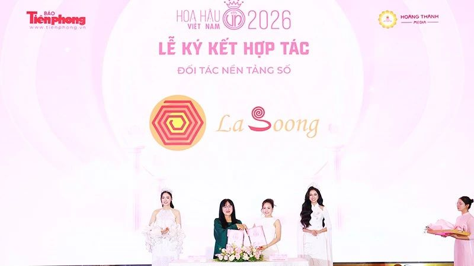
Nền tảng số chuyên về văn hóa, giải trí 🔗 MOI
Cuộc thi Hoa hậu Việt Nam 2026 vừa được khởi động tại Hà Nội, trong đó giới thiệu LaSoong là nền tảng số chính thức. Được phát triển bởi Công ty cổ phần Tiên Phong Invest (TPI), LaSoong là một hệ sinh
Sách cho bạn trẻ 🔗 MOI
Ba khách mời - nhà văn - nhà báo Trần Gia Bảo, nhà văn Trần Minh Hợp và nhà văn trẻ Giai Du đã chia sẻ về hành trình đến với sáng tác cho thiếu nhi và bạn đọc trẻ; những thử thách khi viết cho một thế
Những hòn đảo đang lớn (kỳ 1) 🔗 MOI
Có những sinh vật thích nghi nhanh hơn con người, những thứ tưởng có sẵn lại chưa thể dùng ngay và những không gian chỉ khi tự mình bước đi mới thấy hết được. Những trật tự khác đang dần hình thành. K
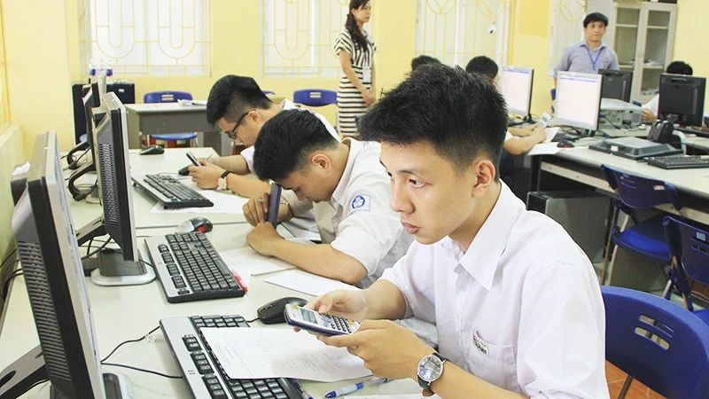
Minh bạch quy đổi điểm xét tuyển đại học 🔗 MOI
Hướng tới “mặt bằng chung” trong tuyển sinh Theo hướng dẫn tuyển sinh năm 2026, tất cả thí sinh, kể cả thí sinh xét tuyển thẳng, đều phải đăng ký xét tuyển trực tuyến trên Hệ thống hỗ trợ tuyển sinh c
Tung học bổng thu hút sinh viên vào ngành mũi nhọn 🔗 MOI
Việc Chính phủ ban hành danh mục 10 nhóm công nghệ chiến lược đang tạo hiệu ứng tích cực trong mùa tuyển sinh 2026. Nhiều trường đại học kỳ vọng chính sách học bổng và ưu tiên đầu tư sẽ kéo thí sinh đ
Tổng thống Iran họp bàn với Lãnh tụ tối cao Khamenei trước 'giờ G' 🔗 MOI
Theo hãng tin bán chính thống Fars và báo Mizan của ngành tư pháp Iran, Tổng thống Pezeshkian hôm nay (7/5) đã đề cập đến sự cần thiết phải “tăng cường tình đoàn kết, sự tin tưởng và tính thống nhất t
Hội chứng 'sợ bẩn' khiến vợ chồng kết hôn 19 năm nhưng không gần gũi 🔗 MOI
Bệnh viện Sir Run Run Shaw liên kết với trường Y thuộc Đại học Chiết Giang hôm 28/4 thông tin về trường hợp vợ chồng chị Li và anh Zhang ở thành phố Hàng Châu, khiến nhiều người xúc động, theo Sohu. S
Aston Villa đè bẹp Nottingham, vào chung kết Europa League 🔗 MOI
08/05/2026 03:58 foul Hết giờ! Aston Villa vào chung kết Europa League 90+4': Aston Villa vùi dập Nottingham Forest 4-0 ở trận bán kết lượt về, qua đó thắng chung cuộc 4-1 sau hai lượt để giành vé vào
Dàn sao tập dượt trước thềm gala Vietnam Game Awards 2026 🔗 MOI
Thành viên Uprize gồm ca sĩ Cường Bạch, Phúc Nguyên, Lâm Anh, Đức Duy, Wonbi, Duy Lân và Long Hoàng.- nhóm nhạc bước ra từ chương trình Tân binh toàn năng - tập dượt bản Thunder (Sấm sét) lúc 22h15. G
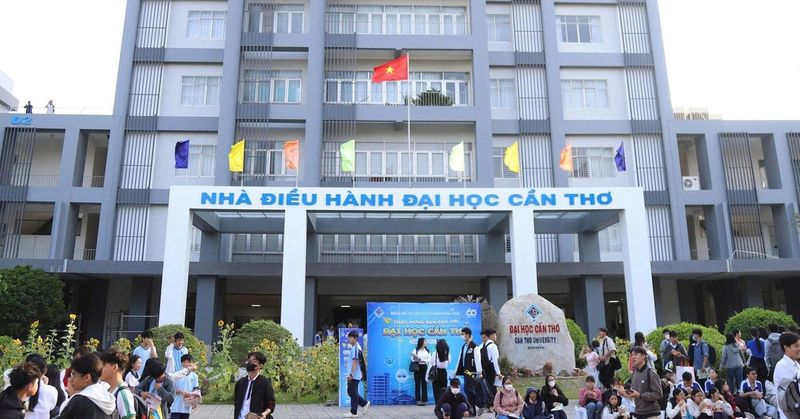
Sáp nhập trường cao đẳng vào Đại học Cần Thơ và Trường đại học Khoa học 🔗 MOI
Khu nhà điều hành Đại học Cần Thơ - Ảnh: T.LŨY Cụ thể, Thủ tướng quyết định sáp nhập Trường cao đẳng Luật miền Nam (trực thuộc Bộ Tư pháp) vào Đại học Cần Thơ (Bộ Giáo dục và Đào tạo). Đồng thời sáp n
Sắp có ‘Kính vạn hoa’ truyện tranh? 🔗 MOI
Nhà văn Nguyễn Nhật Ánh hạnh phúc khi rất nhiều bạn đọc đến giao lưu với ông nhân kỷ niệm 30 năm ra mắt bộ truyện Kính vạn hoa hổi tháng 12-2025 tại TP.HCM - Ảnh: LINH ĐOAN Hồi tháng 12-2025, nhân kỷ

Hệ thống Bảo hiểm xã hội Việt Nam: Tăng tốc thực hiện các chỉ tiêu nhiệm vụ năm 2025 🔗 MOI
Theo Bảo hiểm xã hội (BHXH) TP. Hồ Chí Minh, mặc dù năm 2025 gặp một số khó khăn, tuy nhiên tập thể cán bộ viên chức, người lao động BHXH TP. Hồ Chí Minh quyết tâm hoàn thành vượt chỉ tiêu giao, với s

Coi chừng nhiễm liên cầu lợn vì thói quen ăn tiết canh, thịt tái 🔗 MOI

Làm thế nào để lên thực đơn dinh dưỡng cho gia đình nhiều thế hệ? 🔗 MOI

Khám tiền hôn nhân ở nam và nữ khác nhau như thế nào? 🔗 MOI

Sử dụng thuốc tăng cường sinh lý để kéo dài 'cuộc yêu', có nên không? 🔗 MOI

Chồng không tinh trùng nhưng vợ vẫn sinh được con 'chính chủ', vì sao? 🔗 MOI

Viêm da tiết bã ở trẻ em khác gì ở người lớn? 🔗 MOI

Xóa xăm có xóa được triệt để hay không? 🔗 MOI

6 dấu hiệu thầm lặng cảnh báo đột quỵ trước 1 tháng 🔗 MOI
Theo The Times of India, 6 dấu hiệu của cơ thể cảnh báo trước 1 tháng khi đột quỵ sắp xảy ra: 1. Chóng mặt bất thường Cảm giác chóng mặt thường được cho là do bỏ bữa, mất nước hoặc đứng dậy quá nhanh.
Hạ ngôi sao Hàn Quốc, Trần Quyết Chiến toàn thắng ngày ra quân giải châu Á 🔗 MOI
Trần Quyết Chiến thắng ấn tượng tại vòng bảng giải châu Á - Ảnh: ĐỨC KHUÊ Tại giải lần này, Trần Quyết Chiến rơi vào bảng C cùng với Choi Wan Young, Lim Jung Deok (Hàn Quốc) và Takahashi Tomotaka (Nhậ
Lịch trực tiếp V-League vòng 22: Công An Hà Nội đấu Nam Định 🔗 MOI
Lịch trực tiếp V-League vòng 22: Công An Hà Nội đấu Nam Định - Đồ họa: AN BÌNH Vòng 22 LPBank V-League 1 2025-2026 mở màn với trận đấu giữa SHB Đà Nẵng gặp Becamex TP.HCM (18h ngày 8-5). Đội bóng sông
Vượt đường sắt khi chắn tự động đang hạ, tài xế bị xử phạt 5 triệu đồng 🔗 MOI
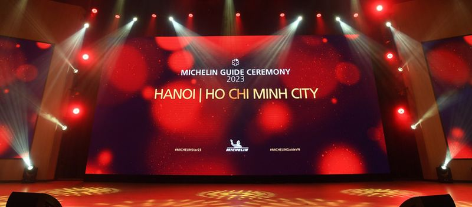
Nhà hàng, quán ăn, đầu bếp MICHELIN 🔗 MOI
Sao nhập ngũ concert 2026 ẩn hình ảnh của Hải Đăng Doo 🔗 MOI
Hải Đăng Doo từng được giới thiệu sẽ biểu diễn tại Sao nhập ngũ concert 2026 - Ảnh: FBNV Trước tin tức gây xôn xao trên mạng xã hội cho rằng Hải Đăng Doo dùng "bóng cười", Tuổi Trẻ Online liên hệ bộ p
Sách và văn hóa đọc 🔗 MOI

Hoàn thiện khung khổ pháp lý về tiết kiệm 🔗 MOI
Pháp luật Trong công cuộc phòng, chống lãng phí hiện nay khó có thể tránh khỏi những khó khăn, nguy hiểm, ảnh hưởng tới người đấu tranh chống lãng phí. Do đó, việc bảo vệ người cung cấp thông tin phát
Lái xe đánh võng, không chịu dừng theo lệnh, tông gãy chân đại úy công an 🔗 MOI
Đại tá Nguyễn Đức Long - Phó giám đốc Công an TP Hà Nội - đến thăm hỏi, động viên đại úy Đào Quang Hòa tại Bệnh viện Hữu nghị Việt Đức - Ảnh: Công an Hà Nội Ngày 7-5, Công an Hà Nội thông tin về vụ na
Học viện Y dược học cổ truyền Việt Nam dự kiến tăng học phí gần gấp đôi 🔗 MOI
Sinh viên Học viện Y dược học cổ truyền Việt Nam - Ảnh: NTCC Ngày 7-5, Học viện Y dược học cổ truyền Việt Nam công bố thông tin tuyển sinh đại học chính quy năm 2026 với 1.350 chỉ tiêu, tăng 300 chỉ t
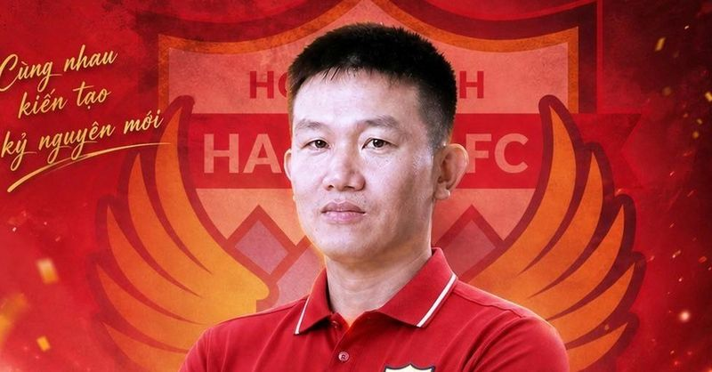
HLV Phan Như Thuật ra mắt ở trận gặp Thể Công - Viettel 🔗 MOI
HLV Phan Như Thuật được CLB Hà Tĩnh đăng ký thành công - Ảnh: HLHT Fans CLB Hồng Lĩnh Hà Tĩnh (CLB Hà Tĩnh) đã đăng ký thành công chức danh HLV trưởng cho cựu tiền vệ Sông Lam Nghệ An Phan Như Thuật .
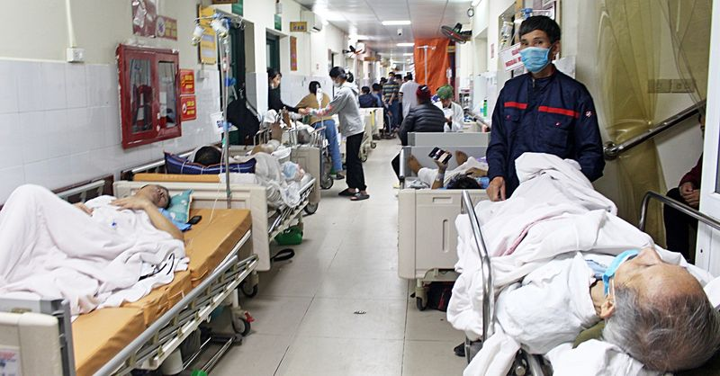
Bệnh viện đã quá tải, lại gặp khó vì bảo hiểm y tế 'treo' tiền giường 🔗 MOI
Bệnh viện Hữu nghị Việt Đức thường xuyên quá tải, nhiều giường bệnh phải kê tại hành lang bệnh viện - Ảnh: D.LIỄU Với một bệnh viện nguồn thu hằng năm chỉ vài trăm tỉ đồng, khoản 7,3 tỉ bị "treo" là k
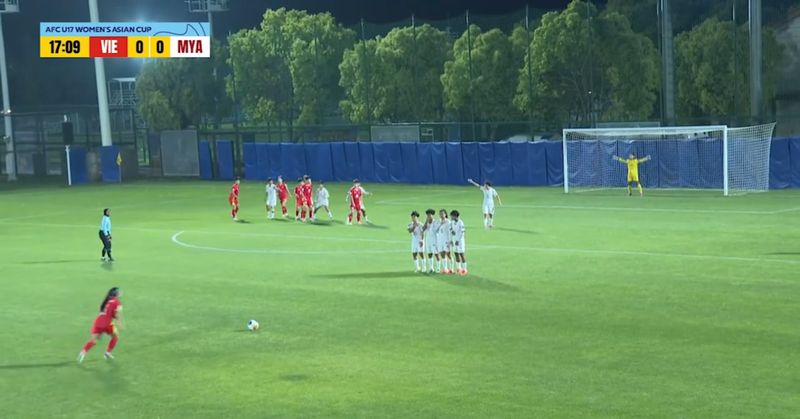
Chiêm ngưỡng 2 siêu phẩm đá phạt giúp U17 nữ Việt Nam đánh bại Myanmar 🔗 MOI
U17 nữ Việt Nam đánh bại U17 Myanmar nhờ 2 siêu phẩm đá phạt - Video: TV360 Bước vào lượt đấu cuối cùng, các cầu thủ đội tuyển U17 nữ Việt Nam đứng trước áp lực lớn khi buộc phải giành trọn 3 điểm để
Thời tiết hôm nay 8-5: Nam Bộ nắng nóng trở lại, Bắc Bộ mưa to 🔗 MOI
Nam Bộ thời tiết nắng nóng trở lại sau nhiều ngày có mưa về chiều - Ảnh: DUYÊN PHAN Trung tâm Dự báo khí tượng thủy văn quốc gia cho biết do ảnh hưởng không khí lạnh nên thời tiết Bắc Bộ, Thanh Hóa và

Nhật Bản ra mắt 'máy giặt người' trị giá 385.000 USD, làm sạch từ đầu đến chân trong 15 phút 🔗 MOI
Thống đốc Yoshimura Yoshifumi của tỉnh Osaka trải nghiệm máy giặt người Mirai - Ảnh: SISA COMMUNICATION YOUTUBE Theo trang Interesting Engineer ngày 30-11, Công ty Science Inc. của Nhật Bản vừa chính

Cải cách tài chính công thúc đẩy tăng trưởng 🔗 MOI
Pháp luật Trong những năm qua, cùng với việc đẩy mạnh tiến trình xây dựng Nhà nước pháp quyền Việt Nam xã hội chủ nghĩa, công tác xây dựng và hoàn thiện hệ thống pháp luật đã đạt được nhiều thành tựu
bảng giá truyền thông 🔗 MOI

Thông cáo báo chí 🔗 MOI
Thông cáo báo chí 07/05/2026 (Chinhphu.vn) - Văn phòng Chính phủ vừa có Thông cáo báo chí chỉ đạo, điều hành của Chính phủ, Thủ tướng Chính phủ ngày 7/5/2026. 06/05/2026 (Chinhphu.vn) - Văn phòng Chín

Chỉ đạo, quyết định của Chính phủ - Thủ tướng Chính phủ 🔗 MOI
07/05/2026 (Chinhphu.vn) - Phó Thủ tướng Chính phủ Phạm Thị Thanh Trà vừa ký Quyết định số 816/QĐ-TTg ngày 07/5/2026 phê duyệt Chương trình “Phát triển các môn... 07/05/2026 (Chinhphu.vn) - Chính phủ
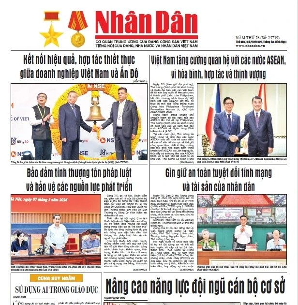
Báo Nhân Dân số 25739 🔗 MOI
Nước giàu nhất Đông Nam Á cho phép giáo viên dùng roi với học sinh trên 9 tuổi 🔗 MOI
Singapore bảo vệ hình phạt dùng roi trong trường học Theo CNN , phát biểu trước Quốc hội hôm 6/5, Bộ trưởng Giáo dục Singapore Desmond Lee cho biết các trường học có thể áp dụng hình thức đánh roi nếu
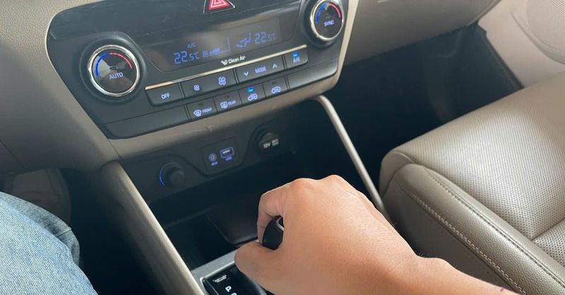
Tôi có thói quen đặt tay lên cần số xe số tự động, có nên bỏ? 🔗 MOI
Tôi đang sử dụng một chiếc xe số tự động đời mới. Dù tay phải gần như không phải thao tác gì liên quan đến vào số, kéo phanh tay... trong quá trình điều khiển, nhưng do thói quen từ thời học lái rồi s
Phức tạp truy vết ổ dịch trên du thuyền 🔗 MOI
Argentina bắt đầu gửi vật liệu di truyền của vi rút Andes (biến thể của vi rút Hanta) cùng thiết bị xét nghiệm tới Tây Ban Nha, Senegal, Nam Phi, Hà Lan và Anh trong nỗ lực hỗ trợ các nước truy vết. A
Siết vi phạm bản quyền: Tạo động lực cho đổi mới sáng tạo 🔗 MOI
Quyết liệt xử lý vi phạm sở hữu trí tuệ Thủ tướng Chính phủ vừa yêu cầu các bộ ngành đẩy mạnh thực thi quyền sở hữu trí tuệ (SHTT) trên toàn quốc, bảo đảm công tác đấu tranh, ngăn chặn và xử lý hành v
[Video] Dự báo thời tiết ngày 8/5/2026: Mưa dông bao trùm miền Bắc 🔗 MOI
Theo dự báo mới nhất, thời tiết trên cả nước trong ngày mới có nhiều biến động dưới tác động của khối không khí lạnh tăng cường từ phía Bắc kết hợp cùng điều kiện nhiễu động trong khí quyển. Tại Bắc B
Cơ chế đặc thù xác định danh tính hài cốt liệt sỹ bằng phương pháp giám định ADN 🔗 MOI
Facebook Twitter Lưu bài viết Bản in Copy link Chính phủ ban hành Nghị quyết số 26/2026/NQ-CP về cơ chế, chính sách đặc thù nhằm tháo gỡ khó khăn trong tổ chức lấy mẫu, giám định và xác định danh tính
Điểm tựa nơi đầu sóng, bảo vệ chủ quyền biển đảo 🔗 MOI
Facebook Twitter Lưu bài viết Bản in Copy link Những cột mốc chủ quyền sừng sững, hiên ngang giữa trùng khơi được canh giữ ngày đêm bởi các cán bộ, chiến sỹ là minh chứng sống động cho ý chí kiên cườn
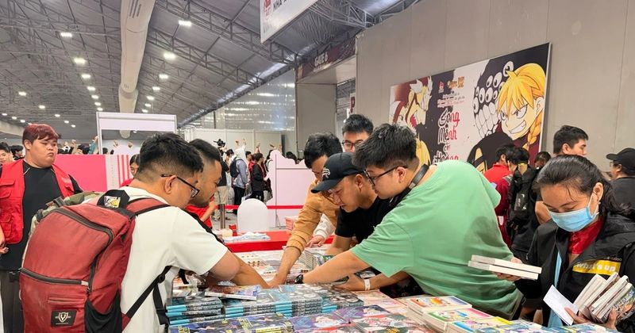
Mỗi cuốn sách đều phải đấu với TikTok 🔗 MOI
Vì sao trẻ em lười đọc sách? Trên kệ sách thiếu nhi ở nhiều nhà sách hiện nay, trẻ em Việt Nam lớn lên cùng Doraemon, Harry Potter, Conan, Chú thuật hồi chiến... Trong khi đó, văn học thiếu nhi Việt N
Hệ lụy 'đếm' bài báo khoa học 🔗 MOI
Bài 1: Giải mã mặt trái của công bố quốc tế Việc thiếu cơ chế kiểm soát, chạy theo các tiêu chí định lượng đang đẩy bài báo khoa học công bố quốc tế lên vị trí “siêu thực”, vượt tầm kiểm soát của chín
Công an phường làm việc với người bạo hành con riêng của “vợ hờ” ở TPHCM 🔗 MOI
Ngày 8-5, Công an phường Dĩ An cho biết đã triệu tập B.T.Q (34 tuổi, quê Đồng Tháp) để làm việc, làm rõ hành vi bạo hành cháu T.G.T (14 tuổi) là con riêng của người phụ nữ sống chung như vợ chồng với
Báo Pháp Luật TP. Hồ Chí Minh 🔗 MOI

Kết quả bóng đá hôm nay 8/5: Aston Villa đấu Freiburg ở chung kết Europa League 🔗 MOI
Kết quả bóng đá hôm nay NGÀY GIỜ TRẬN ĐẤU TRỰC TIẾP UEFA EUROPA LEAGUE 2025/26 – BÁN KẾT LƯỢT VỀ 08/05 02:00 Aston Villa 4-0 Nottingham Forest ON FOOTBALL Freiburg 3-1 Braga ON SPORTS NEWS UEFA CONFER
Đào tạo ngành báo chí trước những thách thức mới 🔗 MOI
B ÙNG NỔ NGÀNH BÁO CHÍ, TRUYỀN THÔNG Thời gian qua, lĩnh vực báo chí - truyền thông tại VN ghi nhận tốc độ phát triển mạnh mẽ. Nếu như trước đây, đào tạo báo chí, truyền thông chủ yếu tập trung ở một
6 loại máy bay chiến đấu hiện đại hàng đầu thế giới 🔗 MOI
Xem nhanh: 1. F-35 Lightning II 2. F-22 Raptor 3.

Xây dựng phường xã hội chủ nghĩa: Khi lý tưởng trở thành chỉ số hạnh phúc 🔗 MOI
Tại buổi tiếp xúc cử tri 10 phường của thành phố Hà Nội vào ngày 4/5 vừa qua, Tổng Bí thư, Chủ tịch nước Tô Lâm đã gợi mở về tư duy quản trị đô thị và kiến tạo xã hội: Hà Nội cần nghiên cứu, thí điểm
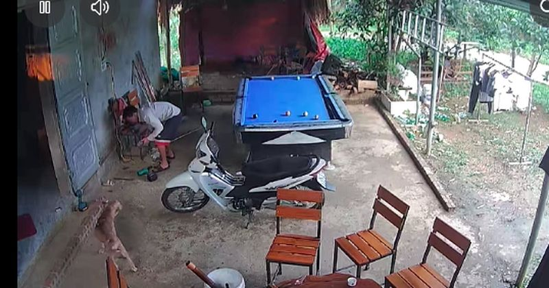
'Em đi đâu đấy?': Chú chó bất ngờ tìm đường về nhà sau 5 tháng mất tích 🔗 MOI
Theo clip được chia sẻ trên mạng xã hội, chú chó mất tích suốt 5 tháng bất ngờ xuất hiện trước cửa nhà, liên tục vẫy đuôi khiến người chủ không giấu được sự ngỡ ngàng. Vừa nhìn thấy thú cưng trở về, n
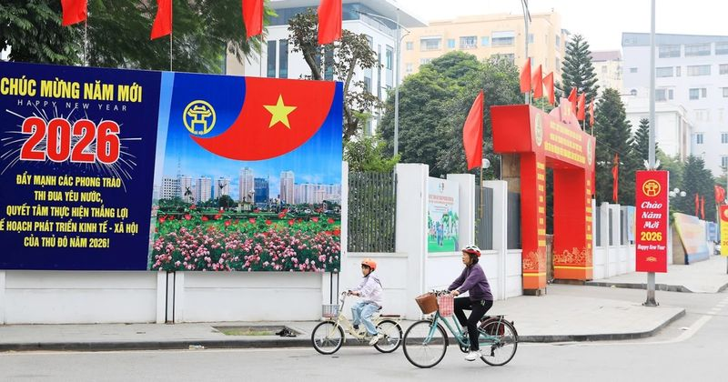
Thí điểm xã, phường xã hội chủ nghĩa không phải là Nhà nước sẽ bao cấp hết 🔗 MOI
Tại buổi tiếp xúc cử tri sau Kỳ họp thứ Nhất, Quốc hội khóa XVI mới đây, Tổng Bí thư, Chủ tịch nước Tô Lâm đã có nhiều gợi mở về việc xây dựng xã, phường xã hội chủ nghĩa trên địa bàn Thủ đô. Trao đổi
Dự báo thời tiết 8/5/2026: Không khí lạnh tràn khắp, miền Bắc mưa giông dịu mát 🔗 MOI
Theo Trung tâm Dự báo khí tượng thủy văn quốc gia, hiện nay (8/5), không khí lạnh đã ảnh hưởng đến khu vực Đông Bắc Bộ, sau đó đến Bắc Trung Bộ và một số nơi ở khu vực Tây Bắc Bộ. Trên đất liền, gió

Cựu công an nhận gần 3,5 tỷ đồng để lo 'chạy án' cho công ty sản xuất sữa giả 🔗 MOI
Như VietNamNet đã đưa tin , VKSND Tối cao vừa hoàn tất cáo trạng truy tố các bị can trong vụ án Nhận hối lộ; Đưa hối lộ; Môi giới hối lộ; Lừa đảo chiếm đoạt tài sản; Vi phạm quy định về kế toán gây hậ
Nhói lòng chuyện ‘mầm non’ bị bạo hành bởi chính cha mẹ ruột 🔗 MOI
Hổ dữ không ăn thịt con, vậy mà... Như VietNamNet đã đưa tin , Công an TP Hà Nội đang điều tra vụ bé gái B.T.H. (4 tuổi) tử vong sau khi bị cha dượng và mẹ đẻ bạo hành tại phòng trọ ở phường Phú Diễn.
Quy định mới về chi phí khi thực hiện dẫn độ 🔗 MOI
Luật Dẫn độ 2025 có hiệu lực từ 1.7.2026 quy định nguyên tắc, thẩm quyền, điều kiện, trình tự, thủ tục thực hiện dẫn độ và trách nhiệm của các cơ quan nhà nước của Việt Nam trong dẫn độ; áp dụng đối v
Đường dây cấp chứng chỉ tiếng Anh giả cho 80.000 người hoạt động như thế nào? 🔗 MOI
Liên quan đến vụ việc đường dây lừa đảo, tổ chức thi và cấp chứng chỉ tiếng Anh trái phép cho hơn 80.000 người, thu gần 200 tỷ đồng vừa bị triệt phá bởi Công an tỉnh Phú Thọ phối hợp Cục An ninh chính
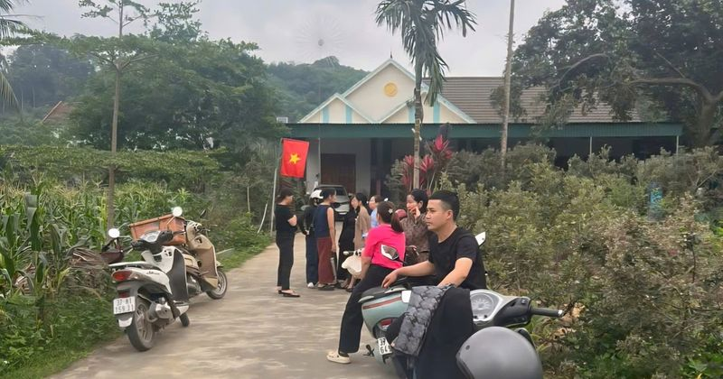
Khốn đốn vì phường, hụi 🔗 MOI
Hấp dẫn bởi lãi cao Hơn 1 tháng qua, nhiều người dân ở xã Tân Kỳ (Nghệ An) đứng ngồi không yên khi chủ phường, hụi là bà H.T.Q, ngụ ở địa phương, bất ngờ tuyên bố dừng hoạt động các dây phường do bà l
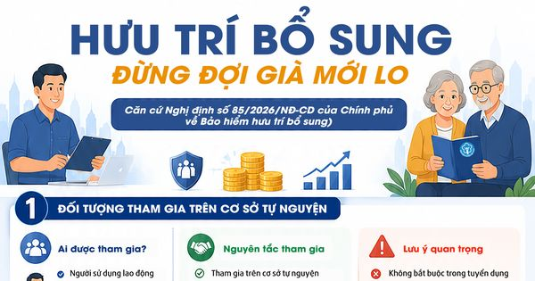
Hưu trí bổ sung: Đừng đợi già mới lo 🔗 MOI
Điểm nóng xung đột ngày 8-5: Nga cảnh báo về NATO 🔗 MOI
Đây là khẳng định của Đại sứ Nga tại Na Uy, ông Nikolay Korchunov, trong cuộc phỏng vấn với hãng thông tấn TASS ngày 5-5. Ông Korchunov lưu ý: "Các sáng kiến quân sự do Tổ chức Hiệp ước Bắc Đại Tây Dư
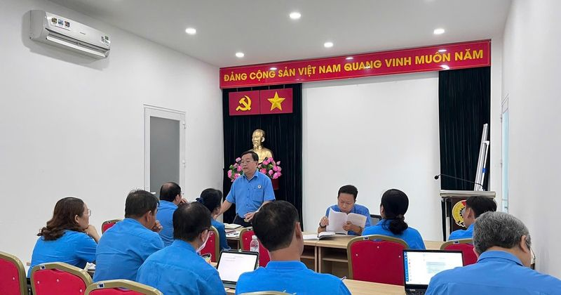
TP.HCM thành lập Trung tâm Tư vấn và Hỗ trợ người lao động Công đoàn 🔗 MOI
(PLO)- Trung tâm Tư vấn và Hỗ trợ người lao động Công đoàn TP.HCM trực thuộc Ủy ban MTTQ Việt Nam TP.HCM có chức năng tư vấn, bảo vệ quyền lợi, chăm lo đời sống người lao động. UBND TP.HCM vừa ban hàn
Cúp C1 Đông Nam Á: CLB Nam Định bất lợi 🔗 MOI
Thất bại 1-2 trước CLB Selangor ở bán kết lượt đi ASEAN Club Championship - Shopee Cup 2025/2026 (Cúp C1 Đông Nam Á) ngày 6-5 khiến CLB Nam Định gặp bất lợi trong cuộc đua giành vé vào chung kết. Thất

Google ra mắt Gemma 4, AI chạy offline trên thiết bị cá nhân 🔗 MOI
Gemma 4 chạy trực tiếp trên thiết bị cá nhân - Ảnh: THOMAS FULLER Trong bối cảnh trí tuệ nhân tạo vẫn phụ thuộc vào hạ tầng đám mây, việc một mô hình có thể hoạt động trực tiếp trên thiết bị cá nhân đ
Brazil đẩy mạnh văn hóa đọc 🔗 MOI
Chính phủ Brazil vừa ra mắt ứng dụng thư viện số miễn phí tên gọi “MEC Livros”. Nền tảng do Bộ Giáo dục Brazil phát triển, cho phép người dân đọc và mượn sách trực tiếp trên các thiết bị thông minh, m
Công bố danh sách được miễn thi tốt nghiệp THPT và xét tuyển thẳng đại học 🔗 MOI
Bộ Giáo dục và Đào tạo đề nghị các Sở Giáo dục và Đào tạo thực hiện việc miễn thi tốt nghiệp THPT năm học 2025-2026 đối với các thí sinh trong danh sách theo quy định; các đại học, học viện, trường đạ
Khổ vì cầu thi công chậm tiến độ 🔗 MOI
Cầu Bất Nạo bắc qua sông An Thành, nằm trên Quốc lộ 17B, là tuyến kết nối chính giữa trung tâm xã Phú Thái với các xã An Thành, Kim Thành và An Phong. Trục giao thông quan trọng này phục vụ nhu cầu đi
Ba nhóm thực phẩm giàu vitamin B nên dùng thường xuyên 🔗 MOI
Vitamin nhóm B gồm nhiều loại như B1, B2, B3, B5, B6, B7, B9 và B12. Mỗi loại đảm nhiệm một chức năng riêng nhưng đều liên quan đến quá trình chuyển hóa năng lượng và nuôi dưỡng tế bào. Ngoại trừ vita
Ăn rau thế nào để hấp thu dinh dưỡng mà không gây đầy bụng? 🔗 MOI
Đầy bụng là tình trạng khá phổ biến khi ăn rau sống hoặc các loại rau giàu chất xơ như bông cải xanh, bắp cải, măng tây. Tuy nhiên, nguyên nhân thường không phải do “không hợp rau” mà liên quan nhiều
Diễn viên Lan Phương: 'Tôi mạnh mẽ hơn sau biến cố hôn nhân' 🔗 MOI
Nghệ sĩ nói về tâm trạng sau hơn một năm giải quyết việc ly hôn chồng người Anh - David Duffy, được tòa chính thức trao quyền nuôi hai con gái sau khi thắng kiện hôm 6/5. - Sau khi tòa phúc thẩm đưa r
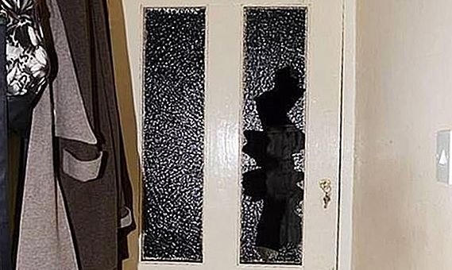
Âm mưu cướp chồng của chị ruột 🔗 MOI
Trở về nhà sau khi tham dự lễ tang vào tối 23/5/2016, bố mẹ của Saima và Sabah Khan, cùng con rể Hafeez Rehman vô cùng sốc trước cảnh tượng kinh hoàng như trong phim kinh dị. Con gái lớn của họ, Saima
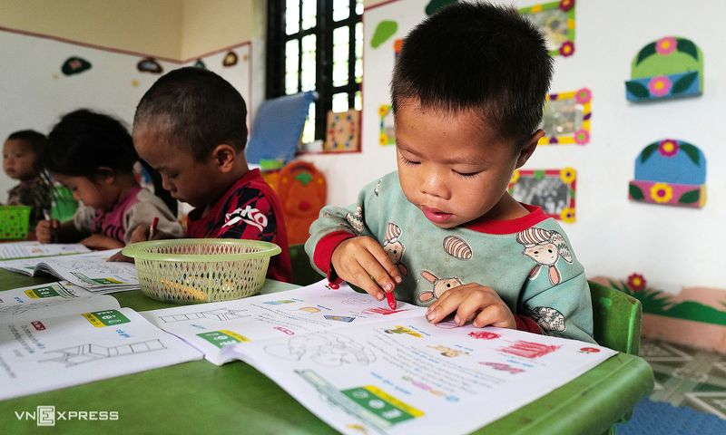
Trẻ em là nạn nhân vụ án sẽ được lo viện phí cấp cứu nếu thủ phạm chưa bồi thường 🔗 MOI
Giai đoạn 2021-2024 có hơn 11.500 người chưa thành niên bị xâm hại trong các vụ án hình sự, ước tính trung bình mỗi năm hơn 2.500 người, theo số liệu thống kê của VKSND Tối cao. Thực tế xét xử các vụ
Thước phim vệ tinh Starlink xếp hàng bay quanh Trái Đất 🔗 MOI
Michael Nicolls, Phó chủ tịch phụ trách kỹ thuật Starlink tại SpaceX, đăng trên X video dài 3,5 phút hé lộ khung cảnh nhìn từ một trong 29 vệ tinh phóng lên quỹ đạo ngày 1/5 bằng tên lửa Falcon 9 từ B
Dự báo mới đáng lo về "siêu El Niño" mạnh kỷ lục 🔗 MOI
Theo các dự báo từ Cơ quan Khí quyển - Đại dương Mỹ (NOAA) và Trung tâm Dự báo thời tiết tầm trung châu Âu (ECMWF), một trong những đợt El Niño mạnh nhất từng được ghi nhận có thể hình thành trong vài

Tạo website chỉ trong vài phút với AI 'Made in Vietnam' 🔗 MOI
Công nghệ AI hỗ trợ lập trình viên tạo code dựa trên ý tưởng. Trong bối cảnh chuyển đổi số ngày càng mạnh mẽ, việc phát triển phần mềm và website truyền thống đòi hỏi nhiều thời gian và nguồn
Nhóm PETA chôn chân vào khối bê tông phản đối 'ngược đãi bò' 🔗 MOI
Các nhà hoạt động PETA ngày 6/5 đội sừng bò giả, chặn lối vào trụ sở PepsiCo ở Purchase, New York, vào thời điểm tập đoàn này tổ chức đại hội cổ đông thường niên. PETA là một trong những tổ chức bảo v
Phân biệt triệu chứng do virus Hanta với các bệnh truyền nhiễm khác 🔗 MOI
Bộ Y tế ngày 5/5 cảnh báo nguy cơ lây nhiễm virus Hanta từ chuột do bệnh diễn tiến rất nhanh, tàn phá cơ thể qua hội chứng phổi hoặc sốt xuất huyết kèm suy thận. Cảnh báo được đưa ra trong bối cảnh xu
Thông tuyến lệ cho trẻ có cần gây mê? 🔗 MOI
Trả lời: Tắc lệ đạo (tắc lệ quản) xảy ra khi hệ thống dẫn lưu nước từ mắt xuống mũi bị tắc nghẽn một phần hoặc hoàn toàn, gây ra chảy nước mắt sống. Tình trạng này thường tự khỏi khi trẻ lớn lên. Song
Chung tay xây dựng ASEAN 🔗 MOI
Phóng viên (PV): Được biết, bà là người phụ nữ đầu tiên giữ chức Bộ trưởng Ngoại giao Philippines. Bà có thể chia sẻ với bạn đọc về câu chuyện truyền cảm hứng này? Đại sứ Delia Albert: Có những dấu ấn
Kích hoạt biện pháp phòng ngừa 🔗 MOI
Hiện báo cáo cho thấy đã ghi nhận 7 ca bệnh, trong đó có 3 người tử vong, 1 bệnh nhân trong tình trạng nguy kịch. Giới chức các bên vừa xác nhận đã đưa nhân viên y tế mặc đồ bảo hộ lên tàu MV Hondius

Giá cao và quyền được lựa chọn 🔗 MOI
Một thị trường vốn dĩ vận hành trên sự đồng thuận giữa bên mua và bên bán (thuận mua vừa bán), tại sao lại cần can thiệp từ bên ngoài? Không phải mọi trường hợp giá cao đều đồng nghĩa với "chặt chém".
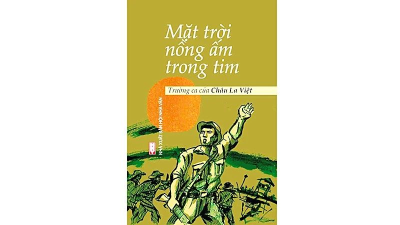
Đối thoại với lịch sử qua trường ca “Mặt trời nồng ấm trong tim” 🔗 MOI
1 . Kỷ niệm 51 năm Ngày giải phóng miền Nam, thống nhất đất nước và 30 năm Ngày Anh hùng Lực lượng vũ trang nhân dân Tô Quyền (1929-1996) đi xa, tập trường ca "Mặt trời nồng ấm trong tim" của nhà văn
Điểm “giải nhiệt” ở phố núi 🔗 MOI
Hồ Ia Băng nằm cách trung tâm Pleiku khoảng 18 km, là dấu tích của một miệng núi lửa đã ngủ yên hàng triệu năm. Từ Pleiku, du khách đi theo hướng La Sơn - Đak Đoa khoảng 30 phút di chuyển là đến ngã b
Du lịch Quảng Ninh thu hơn 21.600 tỷ đồng trong 4 tháng 🔗 MOI
Năm 2025, lĩnh vực dịch vụ - du lịch của Quảng Ninh tăng trưởng 16,4%, đóng góp hơn 50% vào tăng trưởng GRDP của tỉnh. Bước sang năm 2026, đà tăng trưởng tiếp tục được duy trì, khu vực dịch vụ - du lị
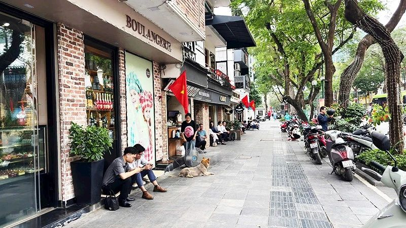
Kinh doanh mặt phố “hạ nhiệt” 🔗 MOI
Đằng sau những cánh cửa đóng kín là áp lực chi phí leo thang, cùng với việc siết chặt quản lý vỉa hè đô thị, buộc hoạt động kinh doanh truyền thống phải tái cơ cấu để thích ứng. Nhiều hộ kinh doanh ch
Triển lãm sáng tạo nghệ thuật tại TP HCM 🔗 MOI
Lần đầu tiên tại Việt Nam, triển lãm về đồ chơi nghệ thuật mang tính sáng tạo, sưu tầm (Art & Art Toys) và đồ chơi được nghệ sĩ thiết kế, biến tấu độc bản mang tên A.R.T Show, do WE'ART phối hợp cùng
Cà Mau yêu cầu bồi thường vụ cá chết do thi công sân bay 🔗 MOI
Yêu cầu được ông Lê Văn Sử nêu tại cuộc họp chiều 7/5 với chủ đầu tư dự án mở rộng sân bay Cà Mau, UBND phường Tân Thành và các đơn vị liên quan. Ông Lê Văn Sử, Phó chủ tịch UBND tỉnh Cà Mau. Ảnh: Chú

An ninh mạng Việt Nam trước thách thức kép: APT và camera giá rẻ 🔗 MOI
Tấn công có chủ đích APT hiện là một trong những rủi ro lớn về an ninh mạng - Ảnh: DRIZ Ngày 18-12, Trung tâm Thông tin, Thống kê và Ứng dụng tiến bộ khoa học công nghệ (Sở Khoa học và Công nghệ TP.HC

CMC OpenAI phát triển mô hình AI pháp lý tiếng Việt 🔗 MOI
Bộ chuẩn đánh giá VLegal - Bench của nhóm nghiên cứu C-OpenAI đăng ký trên cổng arXiv của Trường đại học Cornell - Mỹ phiên bản mới nhất cập nhật ngày 25-12-2025. CMC OpenAI , công t
Bộ Công Thương 🔗 MOI
Theo Quyết định vừa ban hành của Bộ Công Thương, 36 thủ tục hành chính đã được sửa đổi, bổ sung, chủ yếu liên quan đến cấp các loại C/O ưu đãi và không ưu đãi theo các FTA.
Nghiên cứu thị trường 🔗 MOI
9 tháng đầu năm 2025, CPI tăng 3,27%, lạm phát cơ bản tăng 3,19%, Cục Thống kê đánh giá lạm phát 'đang trong tầm kiểm soát'.
Câu chuyện thương trường 🔗 MOI
Các dự án tập trung vào các lĩnh vực công nghiệp, hạ tầng, xử lý rác thải, thiết bị y tế, vật tư sản xuất nông nghiệp, may mặc, thương mại, dịch vụ tổng hợp, chế biến nông sản.
Hà Nội mưa dông hạ nhiệt kéo dài tới khi nào? 🔗 MOI
Nhịp sống Thủ đô Hà Nội tạnh mưa, trời tăng nhiệt nhẹ ít ngày
Cha mẹ liều mình cõng con lội sông dữ đến trường mỗi ngày 🔗 MOI
‘Cõng' đông ấm đến với bà con biên giới ở Đà Nẵng Thấp thỏm qua sông trên những cây cầu treo như ‘răng rụng’ Cận cảnh học trò vùng cao bám lưng cha mẹ vượt sông đến trường

'Học đến khi tan đá' đang hút giới trẻ 🔗 MOI
"Học đến khi tan đá" đang trở thành trào lưu cuốn hút nhiều bạn trẻ trên mạng xã hội - Ảnh chụp màn hình Bỏ điện thoại xuống, tập trung "học đến khi tan đá" Người tham gia thử thách sẽ để một cục đá l

AirSnitch có thể chặn và theo dõi dữ liệu WiFi mà không cần mật khẩu 🔗 MOI
Nguy cơ nghe lén từ bên trong một mạng WiFi nội bộ - Ảnh: EZONE.HK Một kỹ thuật tấn công mới mang tên AirSnitch cho thấy WiFi có mật khẩu mạnh chưa chắc đã an toàn tuyệt đối. Dữ liệu người dùng vẫn có

ChatGPT giảm lỗi chữ méo, sai chính tả khi tạo ảnh 🔗 MOI
Giờ đây ChatGPT đã có thể tạo chữ trong ảnh chính xác hơn - Ảnh: REUTERS Trước đây, các công cụ AI tạo ảnh dù rất mạnh về hình ảnh nhưng lại gặp khó khăn khi xử lý chữ. Những lỗi như sai chính tả, biế

Đột phá trong khám chữa bệnh nhờ tự động hóa 🔗 MOI
Robot hỗ trợ y tá trong bệnh viện - Ảnh: RYAN DAWS Tự động hóa trong bệnh viện là việc ứng dụng các hệ thống công nghệ như trí tuệ nhân tạo (AI), thiết bị IoT, phần mềm quản lý thông minh, máy tự động

Google ra mắt AI nhận diện tin nhắn lừa đảo, người dùng Android có thể yên tâm hơn? 🔗 MOI
Tính năng AI của Google giúp phát hiện tin nhắn và cuộc gọi lừa đảo. Lừa đảo qua tin nhắn và cuộc gọi đang trở thành một trong những rủi ro phổ biến của đời sống số. Khi smartphone ngày càng giữ vai t

Không cần nhấp link nữa: SEO xoay xở ra sao khi AI chiếm trang tìm kiếm? 🔗 MOI
SEO có đang mất dần lợi thế khi AI vào cuộc? Trong hơn một thập kỷ, SEO là nền tảng giúp nội dung tiếp cận độc giả thông qua công cụ tìm kiếm . Tuy nhiên cùng với sự xuất hiện của trí tuệ nhân tạo tro

Code do AI viết nhanh hơn, nhưng lỗi nhiều gấp 1,7 lần con người 🔗 MOI
AI chuyển hóa từ ý tưởng sang sourcecode nhanh nhưng chưa tinh Nghiên cứu mới nhất từ CodeRabbit (một công cụ đánh giá mã nguồn phổ biến) chỉ ra rằng mã nguồn do AI tạo ra có tỉ lệ lỗi cao gấp 1,7 lần
Điều gì xảy ra với thận khi uống soda mỗi ngày? 🔗 MOI
Soda màu sẫm hay nước ngọt có gas màu sẫm là một trong những đồ uống đóng lon phổ biến, được giới trẻ ưa chuộng. Với người khỏe mạnh, thỉnh thoảng uống một lon nước ngọt thường không ảnh hưởng đáng kể
Ồn ào Hải Đăng Doo liên quan "bóng cười": Ban tổ chức concert có động thái gì? 🔗 MOI
Những giờ qua, cái tên Hải Đăng Doo (tên thật Đỗ Hải Đăng, sinh năm 2000) bất ngờ trở thành từ khóa phủ sóng mạng xã hội sau loạt hình ảnh gây tranh cãi liên quan đến một buổi tiệc riêng tại khách sạn
Cảnh hoang tàn Dinh Tỉnh trưởng 141 năm tuổi bị tháo dỡ trái phép 🔗 MOI
Dinh Tỉnh trưởng Gò Công (phường Gò Công) hiện đã tháo dỡ gần như toàn bộ, chỉ còn một phần mặt tiền so với hình trước khi bị tháo dỡ. Ảnh: Nhut Nguyen . Công trình được người Pháp xây dựng năm 1885,
Bắn bạn cùng phòng 6 phát vì không góp tiền trọ 🔗 MOI
Lorenzo Miller vừa có phiên điều trần đầu tiên hôm 5/5 về tội Âm mưu giết người cấp độ một, Sử dụng súng với ý định phạm tội, Giả mạo hoặc thay đổi bằng chứng, và Bắt cóc nghiêm trọng. Ngày 1/5, cảnh
HLV Roland giúp U.17 Việt Nam sẽ còn hay hơn nữa: Tạo sốc cho Hàn Quốc, tại sao không? 🔗 MOI
HLV Cristiano Roland chuẩn bị rất tốt cho U.17 Việt Nam ảnh: VFF U.17 Việt Nam vượt qua bài test khó đầu tiên Ở mọi giải đấu, trận đầu ra quân luôn rất khó đá khi phần lớn các đối thủ vẫn còn những "b
Lịch thi đấu V-League gay cấn hôm nay: Đà Nẵng vượt khó, dễ rớt hạng nếu thua Becamex TP.HCM 🔗 MOI
HLV Lê Đức Tuấn có giữ được lời hứa ? CLB Đà Nẵng đang gặp khó khăn khi đứng cuối bảng xếp hạng với 13 điểm. Điều an ủi với đội bóng sông Hàn lúc này là CLB PVF-CAND xếp ngay trên họ cũng chỉ nhiều hơ
Báo in ngày 8-5: Chiêu trò của Chủ tịch Hội đồng IEMS với 80.000 người 🔗 MOI
Báo Người Lao Động số ra ngày 8-5-2026. Mời bạn đọc đăng ký gói đọc Báo Người Lao Động E-Paper tại đây . + Việt Nam - Ấn Độ cùng nhau vươn lên (trang 2) Tổng Bí thư, Chủ tịch nước Tô Lâm nhấn mạnh hợp

Hơn 1.600 cơ hội việc làm cho sinh viên sắp ra trường tại TP.HCM 🔗 MOI
Sinh viên sắp ra trường chủ động tìm kiếm việc làm tại ngày hội việc làm - Ảnh: T.D. Ngày 18-4, tại Trường đại học Thủ Dầu Một (trường công lập thuộc UBND tỉnh Bình Dương cũ, nay là UBND TP.HCM), phườ

Những điểm check-in ở Nha Trang 'nổi rần rần trên mạng' 🔗 MOI
Bờ kè xóm Chụt đặc biệt thu hút giới trẻ đến check-in trong thời gian gần đây - Ảnh: TRẦN HOÀI Bên cạnh những điểm đến, các khu du lịch vốn đã nổi tiếng, nhiều điểm check-in miễn phí hoặc với chi phí

Kỳ tích 2 bé sinh đôi chào đời cách nhau 13 tuần 🔗 MOI
Cha mẹ và em bé thứ 2 trong cặp song sinh - Ảnh: BVCC Theo ông Hưng, cha mẹ của bé (36 và 32 tuổi) đã mong con 5 năm mà chưa được toại nguyện, lần này mẹ bé mang thai đôi nhờ hỗ trợ sinh sản (IVF). Đế
Vì sao chúng ta thường tỉnh giấc trước khi báo thức reo? 🔗 MOI
Thức dậy vài phút trước khi báo thức reo là nhờ đồng hồ sinh học của cơ thể - Ảnh: CANVA Trung tâm điều khiển nhịp sinh học nằm trong não, gọi là nhân trên giao thoa thị giác (suprachiasmatic nucleus)

Nam sinh chuyên Lê Hồng Phong TP.HCM đạt điểm SAT 1.570, nhận học bổng 100% tại Phần Lan 🔗 MOI
Nguyễn Hoàng Hà vừa giành được học bổng 100% tại Phần Lan - Ảnh: TRỌNG NHÂN Chinh phục SAT bằng kiến thức nền và kỹ năng làm bài Số điểm SAT đạt 1.570/1.600 của Hoàng Hà khiến ai nhìn thấy cũng không

Lái Ferrari 849 Testarossa mới hiểu vì sao có người sẵn sàng đổi penthouse lấy 'ngựa chồm nước Ý' 🔗 MOI
Ferrari 849 Testarossa được lấy cảm hứng từ một số mẫu Ferrari trước đây. Ferrari 849 Testarossa bán ở Việt Nam với mức giá khởi điểm khoảng 35 tỉ đồng, chưa tính các tùy chọn cá nhân hóa. Nhưng với m

Facebook thử nghiệm tính phí chia sẻ link, 'đổi luật chơi' phân phối nội dung 🔗 MOI
Meta đang thử nghiệm hạn chế chia sẻ link Meta - công ty mẹ của Facebook - đang bắt đầu giới hạn số lượng liên kết mà người dùng có thể đăng mỗi tháng, trừ khi họ đăng ký gói trả phí Meta Verified. Th

Lãnh án vì mua bán người dưới 16 tuổi qua biên giới 🔗 MOI
Các bị cáo trong phiên xét xử ngày 31-3 tại TAND khu vực 8 - Cần Thơ - Ảnh: K.T Tại phiên tòa xét xử, có năm bị cáo trong đó gồm cả cha, mẹ của nạn nhân (dưới 16 tuổi): Thạch Thiện (39 tuổi), Kim Thị

Giải mã hiện tượng du khách đổ đến Huế, Đà Nẵng 🔗 MOI
Khu vực đôi bờ sông Hàn (Đà Nẵng) đông nghẹt người vào cao điểm giỗ Tổ Hùng Vương - Ảnh: B.D. Hình ảnh hàng ngàn người ken đặc, chen nhau đi qua Ngọ Môn để tham quan Đại Nội Huế về đêm trở thành khoản
Liên tiếp ca ngộ độc thuốc nhập viện, bác sĩ cảnh báo nhiều nguy cơ trong kỳ nghỉ lễ 🔗 MOI
Bệnh nhân ngộ độc được điều trị tích cực tại Bệnh viện 19-8 - Ảnh: BVCC Theo bác sĩ Chu Đức Thành, khoa điều trị tích cực và chống độc Bệnh viện 19-8 (Hà Nội), chỉ trong những ngày đầu nghỉ lễ, khoa đ

HLV Philippe Troussier: U22 Việt Nam có sức ép 🔗 MOI
Tiền vệ Công Đến (giữa) trên sân tập tại Campuchia chiều 26-4 - Ảnh: N.K. "Chúng tôi có sức ép về mục tiêu tại SEA Games . Chúng tôi có sức ép phải chơi thứ bóng đá tốt nhất của mình.

Xem video siêu phẩm từ giữa sân của Chanathip vào lưới Công An Hà Nội 🔗 MOI
Video Chanathip lập siêu phẩm vào lưới Công An Hà Nội - Nguồn: FPT Play Ở trận đấu này, CLB Công An Hà Nội đã sớm có bàn thắng dẫn trước ở phút 20 nhờ công của Alan. Sau đó, đại diện bóng đá Việt Nam

6 VĐV nghiệp dư được tuyển chọn vào các CLB bóng rổ chuyên nghiệp 🔗 MOI
Các vận động viên Lâm Bình Duy, Nguyễn Thế Đăng và Trần Minh Tiến (từ trái qua) - Ảnh: BTC Sáng 17-4, tại trụ sở Tập đoàn FPT (Hà Nội) diễn ra sự kiện VBA Rookie Draft 2026. Đây là hoạt động cuối cùng

Mùng 3 Tết, Lễ hội xuân Cần Giờ tại Vinhomes Green Paradise đông vui vượt mong đợi 🔗 MOI
Gian hàng ông đồ thu hút nhiều người đến xin chữ đầu năm - Ảnh: VĨNH SƯƠNG Chị Hằng, một cư dân sống ở Cần Giờ (TP.HCM) nhiều năm, chia sẻ chị không nghĩ Lễ hội xuân Cần Giờ lại đông vui đến vậy. “Lễ
Vợ nói nhiều hay chồng không biết cách lắng nghe? 🔗 MOI
Minh họa: ĐẶNG HỒNG QUÂN Vài năm trước, M. - bạn tôi kể - vợ anh nói nhiều đến mức... "anh chỉ cần ngồi xuống là bị "tra tấn bằng âm thanh"".

'Người Việt nhìn phân khúc để tranh cãi, nhìn giá để mua xe' 🔗 MOI
Omoda C5 SHS-H gây tranh cãi về định vị phân khúc - Ảnh: VĨNH PHÚC Những chiếc xe "xen kẹt" Sự xuất hiện của Omoda C5 SHS-H nhanh chóng làm dấy lên tranh luận xoay quanh việc mẫu xe này thuộc phân khú